| Color | \(f_i\) | \(h_i\) | Porcentaje (%) |
|---|---|---|---|
| Gris | 7 | 0.28 | 28 |
| Verde | 6 | 0.24 | 24 |
| Negro | 5 | 0.20 | 20 |
| Blanco | 3 | 0.12 | 12 |
| Amarillo | 2 | 0.08 | 8 |
| Azul | 2 | 0.08 | 8 |
| Total | 25 | 1.00 | 100 |
Capítulo 1: Estadística descriptiva
Objetivos del capítulo
Al terminar este capítulo, usted estará en capacidad de:
- distinguir entre población y muestra, y entre parámetro y estadístico;
- clasificar variables según su naturaleza y su escala de medida;
- resumir datos cualitativos y cuantitativos mediante tablas y gráficos adecuados;
- calcular e interpretar medidas de tendencia central, dispersión, posición y forma;
- realizar un análisis descriptivo completo usando R.
1 ¿Qué es la estadística?
Todos los días tomamos decisiones a partir de información incompleta. Un ingeniero debe decidir si un lote de concreto cumple la resistencia exigida sin poder ensayar cada metro cúbico; un economista estima la tasa de desempleo del país sin entrevistar a todos los hogares; un médico evalúa si un tratamiento funciona observando solo a algunos pacientes. En todos estos casos aparece el mismo problema: los datos varían. Dos cilindros de la misma mezcla de concreto no resisten exactamente lo mismo, dos hogares parecidos no tienen el mismo ingreso y dos pacientes no responden igual al mismo medicamento. La estadística existe precisamente para razonar con rigor en presencia de esa variabilidad (Walpole et al., 2012, p. 2).
Definición 1 (Estadística) La estadística es la ciencia que se ocupa de recolectar, organizar, resumir, analizar e interpretar datos, con el fin de describir fenómenos y apoyar la toma de decisiones en condiciones de incertidumbre.
Tradicionalmente se distinguen dos grandes ramas:
- La estadística descriptiva organiza y resume los datos disponibles mediante tablas, gráficos y medidas numéricas. Responde preguntas como ¿cómo se comportaron estos datos? Es el objeto de este capítulo.
- La estadística inferencial utiliza la información de una parte del conjunto (la muestra) para obtener conclusiones sobre el todo (la población), cuantificando el riesgo de equivocarse. Responde preguntas como ¿qué podemos afirmar, y con qué confianza, más allá de estos datos? Es el objeto del curso de Estadística II.
Entre ambas está la probabilidad (capítulos 2 a 4), que proporciona el lenguaje matemático para medir la incertidumbre y hace posible el paso de la muestra a la población.
Idea clave
Si todos los datos fueran iguales, bastaría con observar uno solo y la estadística no sería necesaria. Su razón de ser es la variabilidad: describirla, entender de dónde viene y tenerla en cuenta al sacar conclusiones.
2 Población, muestra, parámetro y estadístico
Definición 2 (Unidad de observación) Una unidad de observación (o unidad estadística) es cada uno de los elementos sobre los cuales se registra información: una persona, una empresa, un hogar, una pieza fabricada, un municipio, un día.
Definición 3 (Población) La población es el conjunto completo de unidades de observación que son de interés en un estudio. Su tamaño se denota con \(N\).
Definición 4 (Muestra) Una muestra es un subconjunto de la población que efectivamente se observa. Su tamaño se denota con \(n\).
Cuando se observa a toda la población se dice que se realiza un censo. En la práctica casi siempre se trabaja con muestras, por varias razones: el costo y el tiempo de observar a todos, la imposibilidad de acceder a toda la población y, en algunos casos, porque la medición destruye la unidad (para conocer la resistencia de un cilindro de concreto hay que romperlo).
Para que la muestra permita sacar conclusiones confiables sobre la población, debe ser representativa. La forma más sencilla de procurarlo es seleccionarla al azar, de modo que el investigador no influya en qué unidades quedan incluidas. Una encuesta respondida solo por quienes deciden participar en redes sociales, por ejemplo, puede estar sesgada aunque tenga miles de respuestas.
Definición 5 (Parámetro) Un parámetro es una medida numérica que describe una característica de la población. Es un valor fijo, pero en general desconocido.
Definición 6 (Estadístico) Un estadístico es una medida numérica calculada a partir de los datos de una muestra. Su valor es conocido una vez se observa la muestra, pero cambia de una muestra a otra.
Para no confundirlos, se usa una notación distinta: los parámetros se denotan habitualmente con letras griegas y los estadísticos con letras latinas o con un “gorro” sobre el símbolo del parámetro.
| Característica | Parámetro (población) | Estadístico (muestra) |
|---|---|---|
| Tamaño | \(N\) | \(n\) |
| Media | \(\mu\) | \(\bar{x}\) |
| Varianza | \(\sigma^2\) | \(s^2\) |
| Desviación estándar | \(\sigma\) | \(s\) |
| Proporción | \(p\) | \(\hat{p}\) |
| Correlación | \(\rho\) | \(r\) |
Ejemplo 1 La tasa de desempleo de Colombia en un mes determinado es un parámetro: describe a toda la población económicamente activa del país. Nadie conoce su valor exacto. La cifra que publica el DANE se calcula a partir de una encuesta a una muestra de hogares (la Gran Encuesta Integrada de Hogares), de modo que es un estadístico que se usa para estimar ese parámetro.
Por qué importa la distinción
Como el estadístico cambia de una muestra a otra, es en sí mismo una cantidad que varía. Estudiar cómo varía (su distribución muestral, capítulo 4) es lo que permite, más adelante, construir intervalos de confianza y pruebas de hipótesis.
3 Variables y datos
Definición 7 (Variable) Una variable es una característica de las unidades de observación que puede tomar distintos valores de una unidad a otra.
3.1 Variables determinísticas y aleatorias
Una variable es determinística cuando su valor queda completamente determinado por condiciones conocidas, de manera que, repitiendo esas condiciones, se obtiene siempre el mismo resultado. Por ejemplo, el área de un terreno rectangular de lados conocidos, o el valor final de un CDT con una tasa de interés fija y un plazo pactado.
Una variable es aleatoria cuando, aun repitiendo las mismas condiciones, su valor no puede predecirse con certeza. Por ejemplo, el número de clientes que llegan a un banco entre las 9 y las 10 de la mañana, el tiempo de espera de un bus, o la resistencia de dos cilindros de concreto fabricados con la misma mezcla. La estadística se ocupa de las variables aleatorias; su definición formal se presenta en el capítulo 3.
3.2 Variables cualitativas y cuantitativas
Definición 8 (Variable cualitativa) Una variable es cualitativa (o categórica) cuando sus valores son categorías o atributos que clasifican a las unidades. Por ejemplo: carrera, grupo sanguíneo, sector económico de una empresa, nivel de satisfacción.
Definición 9 (Variable cuantitativa) Una variable es cuantitativa (o numérica) cuando sus valores son números que resultan de contar o de medir, y con los cuales tiene sentido hacer operaciones aritméticas. Por ejemplo: número de hijos, ingreso mensual, estatura, tiempo de espera.
Cuidado con los códigos numéricos
Que una variable se registre con números no la hace cuantitativa. El estrato socioeconómico (1 a 6), el código de una carrera o el número de cédula son números, pero funcionan como etiquetas de categorías. Una prueba sencilla es preguntarse: ¿tiene sentido calcular el promedio? El promedio de los números de cédula de un curso no significa nada.
3.3 Variables cuantitativas discretas y continuas
Definición 10 (Variable discreta) Una variable cuantitativa es discreta cuando solo puede tomar valores aislados, que pueden enumerarse (finitos o infinitos numerables). Habitualmente surge de contar: número de hijos, número de defectos en una lámina, número de accidentes en una semana.
Definición 11 (Variable continua) Una variable cuantitativa es continua cuando puede tomar, al menos en principio, cualquier valor dentro de un intervalo de números reales. Habitualmente surge de medir: estatura, peso, tiempo, temperatura, resistencia de un material.
En la práctica todo instrumento tiene una precisión limitada, así que los datos de una variable continua se registran con un número finito de decimales. Eso no cambia la naturaleza de la variable: la edad es continua aunque la anotemos en años cumplidos. A la inversa, algunas variables técnicamente discretas, como el dinero (que se mide en pesos), suelen tratarse como continuas porque toman una cantidad muy grande de valores posibles.
La Tabla 2 resume la clasificación con ejemplos de distintas áreas.
| Tipo | Ingeniería | Economía y administración | Salud |
|---|---|---|---|
| Cualitativa | Tipo de falla de un equipo | Sector económico de la empresa | Grupo sanguíneo |
| Cuantitativa discreta | Número de defectos por lámina | Número de empleados | Número de consultas al año |
| Cuantitativa continua | Resistencia del concreto (MPa) | Ingreso mensual del hogar | Presión arterial |
3.4 Datos y matriz de datos
Definición 12 (Dato) Un dato es el valor observado de una variable en una unidad de observación concreta.
Los datos de un estudio se organizan en una matriz de datos (o base de datos) en la que cada fila corresponde a una unidad de observación, cada columna a una variable y cada celda a un dato. Esta forma de organización, llamada ordenada (tidy), facilita enormemente el análisis con software (Wickham, 2014; Wickham et al., 2023).
| Estudiante | Carrera | Estrato | Créditos | Estatura (cm) |
|---|---|---|---|---|
| 1 | Ingeniería Civil | 3 | 18 | 172,4 |
| 2 | Economía | 2 | 16 | 160,1 |
| 3 | Química | 4 | 20 | 168,9 |
| 4 | Economía | 3 | 15 | 175,0 |
| 5 | Ingeniería Civil | 1 | 18 | 158,3 |
| 6 | Física | 2 | 17 | 181,2 |
En la Tabla 3, el valor Economía en la fila 2 es un dato de la variable carrera; el valor 175,0 en la fila 4 es un dato de la variable estatura.
4 Escalas de medida
Además de distinguir entre variables cualitativas y cuantitativas, conviene precisar qué información contienen sus valores, porque de ello depende qué operaciones y qué resúmenes tienen sentido. La clasificación más usada, propuesta originalmente por Stevens (1946) y adoptada por los textos actuales (Anderson et al., 2008, p. 6), distingue cuatro escalas de medida.
Escala nominal. Los valores solo identifican categorías, sin ningún orden entre ellas. Lo único que puede afirmarse es si dos unidades pertenecen o no a la misma categoría. Ejemplos: género, carrera, grupo sanguíneo, municipio de nacimiento. Si se codifica el género como Femenino = 0 y Masculino = 1, esos números no representan cantidades ni establecen una jerarquía: son solo etiquetas.
Escala ordinal. Las categorías tienen un orden natural, pero las distancias entre ellas no son medibles. Puede afirmarse que un valor es mayor o menor que otro, pero no cuánto. Ejemplos: estrato socioeconómico, nivel educativo, nivel de satisfacción (de “muy insatisfecho” a “muy satisfecho”). Que el estrato 4 sea mayor que el 2 no significa que esté “el doble” de arriba, y la resta entre estratos tampoco tiene sentido.
Escala de intervalo. Los valores son numéricos y las diferencias entre ellos tienen sentido, pero el cero es arbitrario: no indica ausencia de la característica. Ejemplos: temperatura en grados Celsius o Fahrenheit, año calendario. Pasar de 10 °C a 20 °C implica el mismo aumento que pasar de 20 °C a 30 °C, pero un día a 40 °C no es “el doble de caliente” que uno a 20 °C, porque 0 °C no es ausencia de temperatura.
Escala de razón. Además de diferencias, tienen sentido los cocientes, porque existe un cero absoluto que sí indica ausencia de la característica. Ejemplos: peso, estatura, ingreso, tiempo de espera, temperatura en kelvin. Un peso de 80 kg sí es el doble de uno de 40 kg.
Las escalas están anidadas: cada una conserva las propiedades de las anteriores y añade una nueva. Las variables cualitativas se miden en escala nominal u ordinal, y las cuantitativas en escala de intervalo o de razón.
| Escala | Comparaciones con sentido | Ejemplos | Resúmenes adecuados (se acumulan) |
|---|---|---|---|
| Nominal | \(=, \neq\) | Género, grupo sanguíneo | Frecuencias, proporciones, moda |
| Ordinal | \(<, >\) | Estrato, nivel de satisfacción | Además: mediana, cuartiles, percentiles |
| Intervalo | Diferencias | Temperatura en °C, año calendario | Además: media, desviación estándar |
| Razón | Cocientes | Peso, ingreso, tiempo | Además: coeficiente de variación |
Una advertencia sobre las escalas
La clasificación de Stevens es una guía muy útil, pero no debe aplicarse como una regla mecánica: el análisis adecuado depende también de la pregunta que se quiere responder y del significado de los datos. Un caso frecuente es el de las escalas tipo Likert (por ejemplo, de 1 a 5): en sentido estricto son ordinales, pero en muchas disciplinas se promedian. Sullivan & Artino (2013) discuten cuándo es razonable hacerlo y cuándo conviene usar resúmenes propios de datos ordinales, como la mediana y las frecuencias. Promediar no es automáticamente un error, pero sí exige justificarlo e interpretar el resultado con cautela.
5 Análisis de datos cualitativos
Una vez recolectados los datos, el primer paso no es aplicar fórmulas sino familiarizarse con ellos: ver qué valores aparecen, con qué frecuencia, si hay errores de digitación o categorías inesperadas, y qué patrones sugieren. Esta etapa recibe el nombre de análisis exploratorio de datos, una idea que Tukey (1977) convirtió en parte central del trabajo estadístico y que hoy es el punto de partida de cualquier análisis (Wickham et al., 2023). Para explorar los datos se usan dos herramientas complementarias: las tablas, que muestran los valores exactos, y los gráficos, que permiten captar de un vistazo la forma general de los datos (Anderson et al., 2008, p. 26; Devore, 2008, p. 4).
En esta sección nos ocupamos de las variables cualitativas (escalas nominal y ordinal). Los mismos gráficos y tablas los construiremos más adelante con R; por ahora el objetivo es entender qué muestran y cómo se interpretan.
5.1 Tabla de frecuencias
Supongamos que se han observado \(n\) unidades y que la variable cualitativa tiene \(k\) categorías \(C_1, C_2, \ldots, C_k\). Para que la tabla de frecuencias esté bien construida, las categorías deben cumplir dos condiciones distintas y complementarias:
- Mutuamente excluyentes: ningún dato puede pertenecer a dos categorías a la vez (no hay traslapes).
- Exhaustivas: ningún dato queda sin categoría (no hay faltantes).
Juntas garantizan que cada dato se cuente exactamente una vez. Por ejemplo, las categorías de edad “18 a 25 años” y “25 a 35 años” no son excluyentes, porque una persona de 25 años cabe en ambas. Y si se clasifica la carrera de los estudiantes de un curso solo en “Ingeniería” y “Economía” cuando también hay estudiantes de Física, las categorías no son exhaustivas; se corrige agregando las categorías que falten o una categoría “Otra”.
Definición 13 (Frecuencias absoluta y relativa) La frecuencia absoluta \(f_i\) de la categoría \(C_i\) es el número de unidades que pertenecen a ella. La frecuencia relativa \(h_i\) es la proporción de unidades en esa categoría: \[ h_i = \frac{f_i}{n}, \qquad i = 1, \ldots, k. \] Multiplicada por 100, la frecuencia relativa se expresa como porcentaje.
De la definición se desprenden dos propiedades útiles para verificar los cálculos: \[ \sum_{i=1}^{k} f_i = n \qquad \text{y} \qquad \sum_{i=1}^{k} h_i = 1. \]
Notación que usaremos
| Símbolo | Nombre | Significado |
|---|---|---|
| \(f_i\) | Frecuencia absoluta | Número de datos en la categoría o clase \(i\) |
| \(h_i\) | Frecuencia relativa | Proporción de datos en la categoría o clase \(i\): \(h_i = f_i/n\) |
| \(F_i\) | Frecuencia absoluta acumulada | Número de datos en la categoría o clase \(i\) o en las anteriores: \(F_i = f_1 + \cdots + f_i\) |
| \(H_i\) | Frecuencia relativa acumulada | Proporción acumulada: \(H_i = F_i/n\) |
Las frecuencias acumuladas solo tienen sentido cuando las categorías tienen un orden, es decir, para variables ordinales y cuantitativas.
Definición 14 (Tabla de frecuencias) Una tabla de frecuencias organiza los datos de una variable cualitativa listando sus categorías junto con sus frecuencias absolutas y relativas.
| Categoría | Frecuencia absoluta | Frecuencia relativa |
|---|---|---|
| \(C_1\) | \(f_1\) | \(h_1 = f_1/n\) |
| \(C_2\) | \(f_2\) | \(h_2 = f_2/n\) |
| \(\vdots\) | \(\vdots\) | \(\vdots\) |
| \(C_k\) | \(f_k\) | \(h_k = f_k/n\) |
| Total | \(n\) | \(1\) |
Cuando la variable es ordinal, las categorías tienen un orden y por eso también tiene sentido acumular: la frecuencia absoluta acumulada \(F_i = f_1 + \cdots + f_i\) cuenta cuántas unidades están en la categoría \(C_i\) o en alguna anterior, y la frecuencia relativa acumulada \(H_i = F_i / n\) da la proporción correspondiente. Por ejemplo, con el estrato permitiría responder “¿qué porcentaje de los estudiantes vive en estrato 3 o inferior?”. En una variable nominal, en cambio, acumular no tiene interpretación, porque el orden de las categorías es arbitrario.
En una variable nominal, el único resumen numérico de “valor típico” que tiene sentido es la moda: la categoría con mayor frecuencia. Una variable puede tener más de una moda si varias categorías empatan en la frecuencia más alta.
Ejemplo 2 Se preguntó a un grupo de personas qué color preferirían al comprar un vehículo y se obtuvieron las siguientes respuestas:
Gris, Verde, Gris, Verde, Blanco, Negro, Amarillo, Azul, Gris, Gris, Gris, Verde, Negro, Amarillo, Blanco, Blanco, Negro, Verde, Verde, Azul, Negro, Gris, Verde, Gris, Negro.
La unidad de observación es cada persona encuestada; las \(n = 25\) personas constituyen una muestra de la población de posibles compradores de vehículos. La variable es el color preferido, que es cualitativa y se mide en escala nominal, pues los colores no tienen un orden natural. Contando cuántas veces aparece cada color se obtiene la Tabla 6.
El color más preferido (la moda) es el gris, elegido por 7 de las 25 personas, es decir, el 28 % de la muestra. Le siguen el verde (24 %) y el negro (20 %); entre estos tres colores reúnen el 72 % de las preferencias.
5.2 Representación gráfica
Definición 15 (Diagrama de barras) Un diagrama de barras representa cada categoría mediante un rectángulo cuya altura (o longitud, si las barras son horizontales) es proporcional a su frecuencia, absoluta o relativa. Todas las barras tienen el mismo ancho y se dibujan separadas, para indicar que las categorías son distintas y no forman un continuo.
Definición 16 (Diagrama circular) Un diagrama circular (o de pastel) representa el total de los datos como un círculo dividido en sectores, uno por categoría, cuyo ángulo es proporcional a su frecuencia relativa: el sector de la categoría \(C_i\) tiene un ángulo de \(360° \times h_i\).
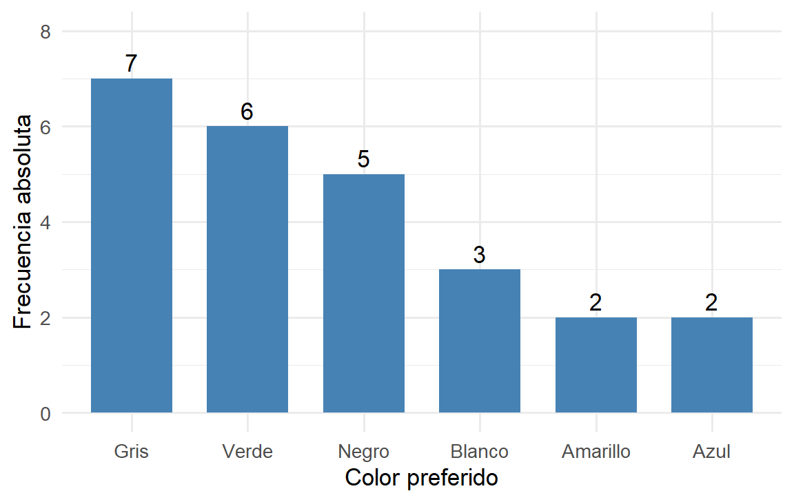
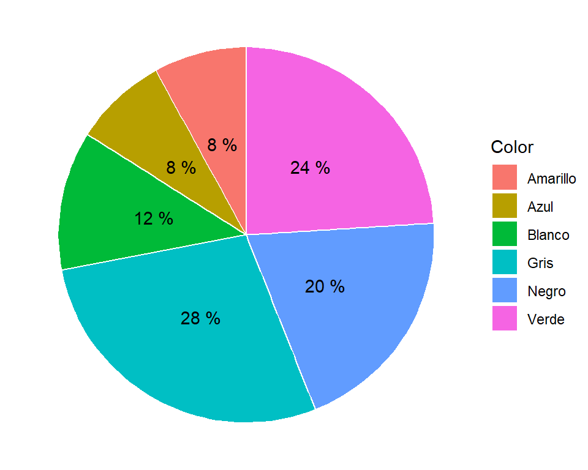
La Figura 1 y la Figura 2 muestran la misma información. Sin embargo, en el diagrama de barras es mucho más fácil comparar categorías: se ve de inmediato que el gris supera al verde, algo que en el diagrama circular cuesta distinguir sin leer los porcentajes. Esto no es casual. Los estudios de percepción visual muestran que las personas comparamos con más precisión longitudes alineadas sobre una misma base que ángulos o áreas (Healy, 2018). Por eso conviene seguir algunas recomendaciones (Wilke, 2019):
- Preferir el diagrama de barras como opción por defecto, ordenando las barras de mayor a menor frecuencia cuando la variable es nominal, y respetando el orden natural de las categorías cuando es ordinal.
- Reservar el diagrama circular para cuando interesa destacar la relación de cada parte con el total, y solo si hay pocas categorías (dos a cuatro).
- Rotular siempre los ejes, indicar el tamaño de la muestra y evitar efectos tridimensionales, que distorsionan las proporciones.
5.3 Tablas de contingencia
Hasta ahora hemos estudiado una variable a la vez. Con frecuencia, sin embargo, interesa saber si dos variables cualitativas están relacionadas: ¿el hábito de fumar es igual de frecuente en hombres que en mujeres?, ¿el medio de transporte que usan los estudiantes depende de su estrato? Para esto se organizan los datos bivariados en una tabla de doble entrada.
Definición 17 (Tabla de contingencia) Una tabla de contingencia (o tabla cruzada) organiza los datos de dos variables cualitativas: las filas corresponden a las categorías de una variable, las columnas a las de la otra, y cada celda contiene la frecuencia \(f_{ij}\) de unidades que pertenecen simultáneamente a la categoría \(i\) de la primera variable y a la categoría \(j\) de la segunda. Los totales por fila, \(f_{i\cdot}\), y por columna, \(f_{\cdot j}\), se llaman frecuencias marginales, y el total general es \(n\).
Ejemplo 3 En una muestra de 233 personas se registró el género y si tienen o no el hábito de fumar. Los resultados se presentan en la Tabla 7.
| Hábito de fumar | Hombre | Mujer | Total |
|---|---|---|---|
| Sí | 65 | 58 | 123 |
| No | 43 | 67 | 110 |
| Total | 108 | 125 | 233 |
Las frecuencias absolutas por sí solas pueden engañar. Hay 65 hombres fumadores y 58 mujeres fumadoras, pero eso no basta para concluir que los hombres fuman más, porque en la muestra hay más mujeres (125) que hombres (108). Para comparar hay que pasar a porcentajes, y en una tabla de contingencia hay tres formas de calcularlos, cada una de las cuales responde a una pregunta diferente:
- Respecto al total general (\(f_{ij}/n\)): ¿qué porcentaje de todas las personas son hombres fumadores? \(65/233 \approx 0{,}279\), es decir, el 27,9 %.
- Respecto al total de cada columna (\(f_{ij}/f_{\cdot j}\)): ¿qué porcentaje de los hombres fuma? \(65/108 \approx 0{,}602\), es decir, el 60,2 %. ¿Y de las mujeres? \(58/125 = 0{,}464\), es decir, el 46,4 %.
- Respecto al total de cada fila (\(f_{ij}/f_{i\cdot}\)): de las personas que fuman, ¿qué porcentaje son hombres? \(65/123 \approx 0{,}528\), es decir, el 52,8 %.
Para responder si el hábito de fumar se relaciona con el género, la comparación adecuada es la de los porcentajes por columna (Tabla 8): en esta muestra fuma el 60,2 % de los hombres frente al 46,4 % de las mujeres.
| Hábito de fumar | Hombre (%) | Mujer (%) | Total (%) |
|---|---|---|---|
| Sí | 60,2 | 46,4 | 52,8 |
| No | 39,8 | 53,6 | 47,2 |
| Total | 100,0 | 100,0 | 100,0 |
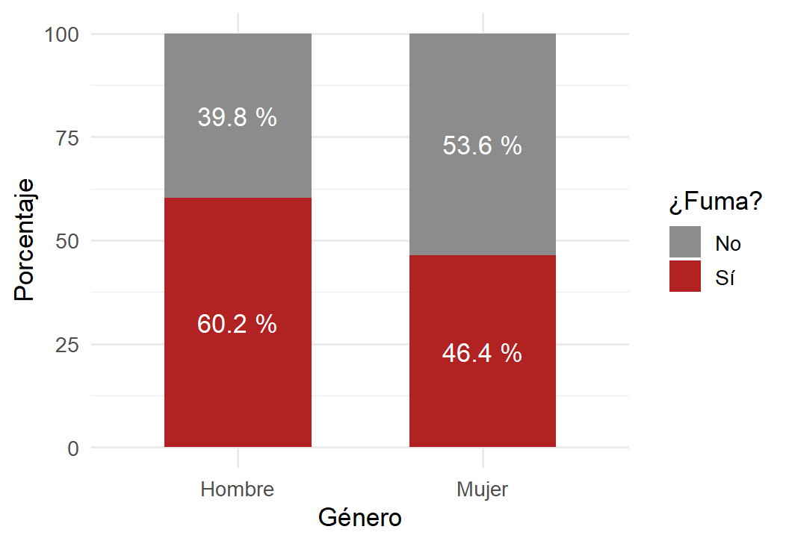
La Figura 3, un diagrama de barras apiladas al 100 %, muestra la misma comparación: cada barra representa a todas las personas de un género y se divide según el hábito de fumar.
Conexión con el capítulo 2
Los tres tipos de porcentajes de una tabla de contingencia son la base intuitiva de tres conceptos de probabilidad que estudiaremos en el capítulo 2: la probabilidad conjunta (respecto al total), la probabilidad marginal (los totales de fila y columna) y la probabilidad condicional (respecto al total de una fila o de una columna).
6 Análisis de datos cuantitativos
Los datos medidos en escala de intervalo o de razón se denominan datos cuantitativos. Como sus valores son números con significado aritmético, además de contar cuántas veces aparece cada valor podemos ordenarlos, agruparlos en intervalos y estudiar cómo se distribuyen a lo largo de la recta numérica (Devore, 2008, pp. 12-17).
Para desarrollar la sección usaremos un ejemplo que acompañará también a la sección siguiente.
Ejemplo 4 Se registró el tiempo, en minutos, que tardan 40 estudiantes en desplazarse de su casa a la universidad. Los datos, en el orden en que fueron recolectados, son:
14, 48, 20, 26, 23, 18, 39, 28, 17, 20, 64, 7, 35, 22, 58, 25, 30, 40, 34, 31, 24, 42, 16, 33, 53, 21, 10, 9, 44, 24, 37, 50, 30, 15, 45, 13, 12, 32, 18, 27.
La variable tiempo de desplazamiento es cuantitativa continua y se mide en escala de razón: un tiempo de 0 minutos significa ausencia de desplazamiento, y 40 minutos es el doble que 20.
6.1 Arreglo ordenado y diagrama de tallo y hojas
Mirar los datos en el orden en que fueron recolectados dice muy poco. El primer paso para organizarlos es ordenarlos.
Definición 18 (Arreglo ordenado) Un arreglo ordenado es el listado de los valores de un conjunto de datos (población o muestra) dispuestos de menor a mayor.
Para el Ejemplo 4, el arreglo ordenado es:
7, 9, 10, 12, 13, 14, 15, 16, 17, 18, 18, 20, 20, 21, 22, 23, 24, 24, 25, 26, 27, 28, 30, 30, 31, 32, 33, 34, 35, 37, 39, 40, 42, 44, 45, 48, 50, 53, 58, 64.
Ya con esto se identifican de inmediato el valor mínimo (7 minutos), el máximo (64 minutos) y la zona donde se concentran los datos.
Una forma de ordenar los datos que además muestra su forma es el diagrama de tallo y hojas, propuesto por Tukey (1977) y presentado en los textos actuales como herramienta para conjuntos de datos pequeños (Anderson et al., 2008, p. 43; Devore, 2008, p. 4). Cada dato se divide en un tallo (los dígitos iniciales, en este caso las decenas) y una hoja (el último dígito, las unidades). Los tallos se escriben en una columna y, a la derecha de cada uno, sus hojas ordenadas:
Tallo | Hojas
0 | 7 9
1 | 0 2 3 4 5 6 7 8 8
2 | 0 0 1 2 3 4 4 5 6 7 8
3 | 0 0 1 2 3 4 5 7 9
4 | 0 2 4 5 8
5 | 0 3 8
6 | 4
Leyenda: 1 | 5 representa 15 minutos.Si se gira el diagrama 90 grados, la longitud de cada fila muestra cuántos datos hay en cada decena: la mayoría de los estudiantes tarda entre 10 y 39 minutos, y unos pocos tardan bastante más. A diferencia de un gráfico, el diagrama conserva todos los valores originales.
6.2 Variables discretas con pocos valores
Cuando la variable es discreta y toma pocos valores distintos, la tabla de frecuencias se construye igual que para una variable cualitativa, con una fila por cada valor. Como los valores son números ordenados, aquí sí tienen sentido las frecuencias acumuladas: la frecuencia absoluta acumulada \(F_i = f_1 + f_2 + \cdots + f_i\) y la frecuencia relativa acumulada \(H_i = F_i / n\).
Ejemplo 5 Se preguntó a 30 estudiantes cuántos hermanos tienen. Los resultados se resumen en la Tabla 9.
| N.º de hermanos (\(x_i\)) | \(f_i\) | \(h_i\) | \(F_i\) | \(H_i\) |
|---|---|---|---|---|
| 0 | 5 | 0,167 | 5 | 0,167 |
| 1 | 11 | 0,367 | 16 | 0,533 |
| 2 | 8 | 0,267 | 24 | 0,800 |
| 3 | 4 | 0,133 | 28 | 0,933 |
| 4 | 2 | 0,067 | 30 | 1,000 |
| Total | 30 | 1,000 |
La frecuencia acumulada permite responder directamente preguntas como “¿qué porcentaje de los estudiantes tiene a lo sumo un hermano?”: basta leer \(H_2 = 0{,}533\), es decir, el 53,3 %. Del mismo modo, el 80 % tiene dos hermanos o menos.
Para graficar una variable discreta se usa un diagrama de bastones: un segmento vertical sobre cada valor, de altura igual a su frecuencia (Figura 4). Los bastones son delgados y separados para indicar que entre un valor y otro no hay datos posibles.
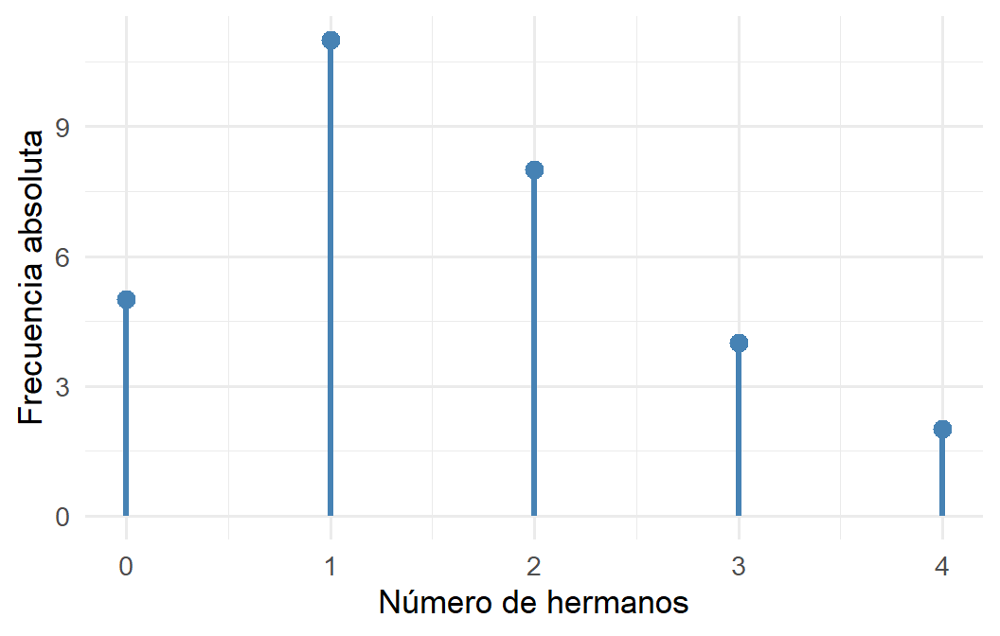
6.3 Tabla de distribución de frecuencias agrupadas
Cuando la variable es continua, o discreta con muchos valores distintos, una tabla con una fila por valor resultaría enorme y casi todas las frecuencias serían 0 o 1. En ese caso se agrupan los datos en intervalos de clase.
Definición 19 (Tabla de frecuencias agrupadas) Una tabla de frecuencias agrupadas divide el rango de los datos en \(k\) intervalos consecutivos \([L_0, L_1), [L_1, L_2), \ldots, [L_{k-1}, L_k)\), llamados clases, y registra para cada clase su frecuencia absoluta \(f_i\), relativa \(h_i\) y sus frecuencias acumuladas \(F_i\) y \(H_i\). Los números \(L_{i-1}\) y \(L_i\) son los límites de la clase \(i\), la diferencia \(c = L_i - L_{i-1}\) es su amplitud y el punto medio \[ x_i = \frac{L_{i-1} + L_i}{2} \] es su marca de clase, que se usa como valor representativo de los datos de la clase.
Usaremos la convención de que cada clase incluye su límite inferior y excluye el superior, lo que se indica con la notación \([L_{i-1}, L_i)\). Así, un dato igual a un límite, por ejemplo 25 en las clases \([15, 25)\) y \([25, 35)\), se cuenta en la clase superior, y las clases resultan mutuamente excluyentes.
La construcción sigue estos pasos:
- Calcular el rango, \(R = \text{máximo} - \text{mínimo}\).
- Elegir el número de clases \(k\). Con muy pocas clases se pierde información; con demasiadas, la tabla vuelve a ser un listado. Una referencia habitual es la regla de Sturges (1926), \(k \approx 1 + \log_2 n = 1 + 3{,}322 \log_{10} n\); otra es \(k \approx \sqrt{n}\) (Daniel, 1987, p. 24; Devore, 2008, p. 17). En la práctica suelen usarse entre 5 y 20 clases (Anderson et al., 2008, p. 34; Devore, 2008, p. 17), y vale la pena probar varias opciones y quedarse con la que muestre mejor la forma de los datos.
- Calcular la amplitud, \(c \approx R / k\), y redondearla hacia arriba a un valor cómodo de leer.
- Fijar el primer límite \(L_0\) igual o un poco menor que el mínimo, preferiblemente en un número redondo, y verificar que la última clase contenga al máximo.
- Contar cuántos datos caen en cada clase y calcular \(h_i\), \(F_i\) y \(H_i\).
Ejemplo 6 Para los tiempos de desplazamiento del Ejemplo 4:
- \(R = 64 - 7 = 57\) minutos.
- Con la regla de Sturges, \(k \approx 1 + \log_2 40 = 6{,}32\), de modo que tomamos \(k = 6\) clases (la regla \(\sqrt{40} \approx 6{,}3\) da lo mismo).
- \(c \approx 57 / 6 = 9{,}5\), que redondeamos a \(c = 10\) minutos.
- Tomamos \(L_0 = 5\). Las clases son \([5, 15), [15, 25), \ldots, [55, 65)\), y la última contiene al máximo, 64.
- Contando en el arreglo ordenado se obtiene la Tabla 10.
| Clase | \(x_i\) | \(f_i\) | \(h_i\) | \(F_i\) | \(H_i\) |
|---|---|---|---|---|---|
| [5,15) | 10 | 6 | 0.15 | 6 | 0.15 |
| [15,25) | 20 | 12 | 0.30 | 18 | 0.45 |
| [25,35) | 30 | 10 | 0.25 | 28 | 0.70 |
| [35,45) | 40 | 6 | 0.15 | 34 | 0.85 |
| [45,55) | 50 | 4 | 0.10 | 38 | 0.95 |
| [55,65) | 60 | 2 | 0.05 | 40 | 1.00 |
La tabla muestra, por ejemplo, que la clase con más estudiantes es \([15, 25)\), con 12 (el 30 %), y que el 70 % de los estudiantes tarda menos de 35 minutos (\(H_3 = 0{,}70\)).
Agrupar tiene un costo
Al agrupar se pierde el valor exacto de cada dato: la tabla dice que hay 10 estudiantes entre 25 y 35 minutos, pero no cuánto tardó cada uno. Por eso, los cálculos hechos a partir de una tabla agrupada (por ejemplo, usando las marcas de clase) son aproximaciones. Cuando se dispone de los datos originales, es preferible calcular las medidas descriptivas con ellos.
6.4 Histograma, polígono de frecuencias y ojiva
Definición 20 (Histograma) Un histograma es un gráfico formado por rectángulos contiguos, uno por cada clase, cuya base es el intervalo de clase y cuya altura es la frecuencia (absoluta o relativa) de la clase, cuando todas las clases tienen la misma amplitud.
A diferencia del diagrama de barras, en el histograma los rectángulos se dibujan pegados, porque las clases cubren sin interrupción un intervalo de la recta numérica. Si las clases tuvieran amplitudes distintas, la altura de cada rectángulo debería ser la densidad \(h_i / c_i\), de modo que sea el área, y no la altura, la que represente la frecuencia (Devore, 2008, p. 17).
Definición 21 (Polígono de frecuencias) El polígono de frecuencias se obtiene uniendo con segmentos los puntos \((x_i, f_i)\), donde \(x_i\) es la marca de clase. Para cerrarlo, se agrega al comienzo y al final una clase vacía, con frecuencia cero.
El polígono muestra la misma información que el histograma, pero resulta especialmente útil para comparar dos o más distribuciones en un mismo gráfico, por ejemplo, los tiempos de desplazamiento de estudiantes de dos sedes distintas.
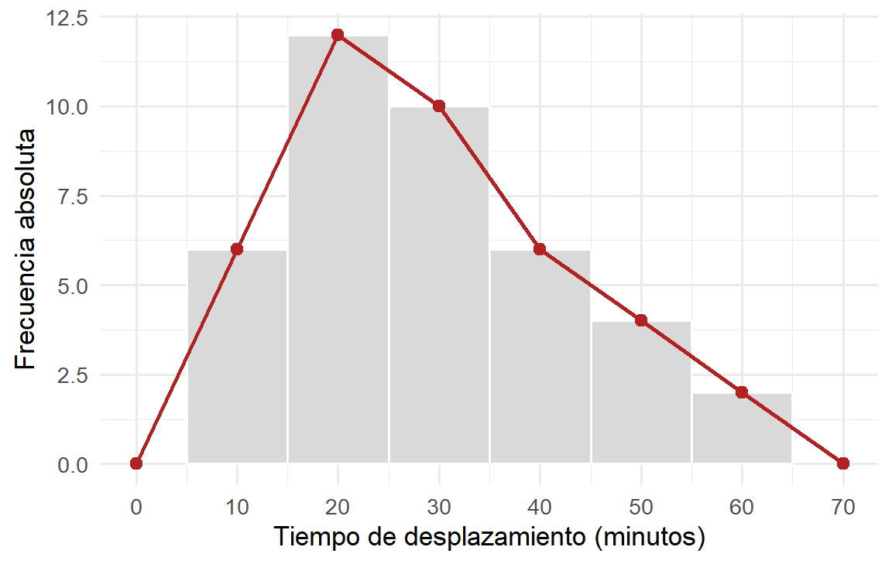
Definición 22 (Ojiva) La ojiva es el gráfico de las frecuencias relativas acumuladas. Se construye uniendo los puntos \((L_i, H_i)\), es decir, la frecuencia acumulada se ubica sobre el límite superior de cada clase, comenzando en el punto \((L_0, 0)\).
La ojiva siempre es creciente y termina en 1 (o 100 %). Su utilidad es responder preguntas del tipo “¿qué porcentaje de los datos es menor que cierto valor?” y, a la inversa, “¿por debajo de qué valor está cierto porcentaje de los datos?”. En la Figura 7 se lee que el 70 % de los estudiantes tarda menos de 35 minutos y que la mitad tarda menos de unos 27 minutos. Ese último valor es una aproximación de la mediana, que calcularemos con exactitud en la siguiente sección.
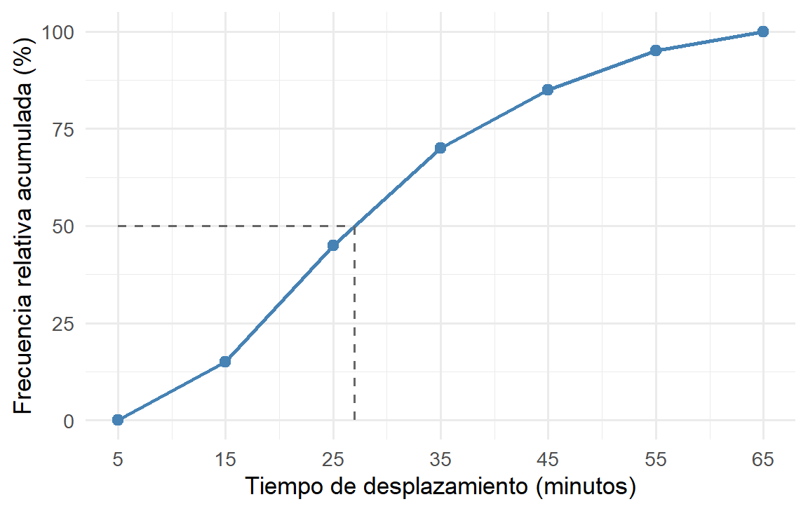
6.5 Forma de una distribución
Además de mostrar dónde se concentran los datos y qué tan dispersos están, el histograma revela la forma de la distribución, que es uno de los aspectos más importantes para interpretar los datos y para elegir las medidas descriptivas adecuadas (Devore, 2008, p. 18). Las formas más frecuentes, ilustradas en la Figura 8, son:
- Simétrica: la mitad izquierda es aproximadamente el reflejo de la derecha. Por ejemplo, las estaturas de personas adultas del mismo sexo.
- Asimétrica a la derecha (sesgo positivo): la mayoría de los datos está en valores bajos y una cola larga se extiende hacia los valores altos. Es típica de ingresos, precios de vivienda y tiempos de espera.
- Asimétrica a la izquierda (sesgo negativo): la cola larga se extiende hacia los valores bajos. Por ejemplo, las calificaciones de un examen fácil, en el que casi todos obtienen notas altas.
- Bimodal: presenta dos picos, lo que con frecuencia indica que los datos provienen de dos grupos distintos mezclados (por ejemplo, las estaturas de hombres y mujeres juntas).
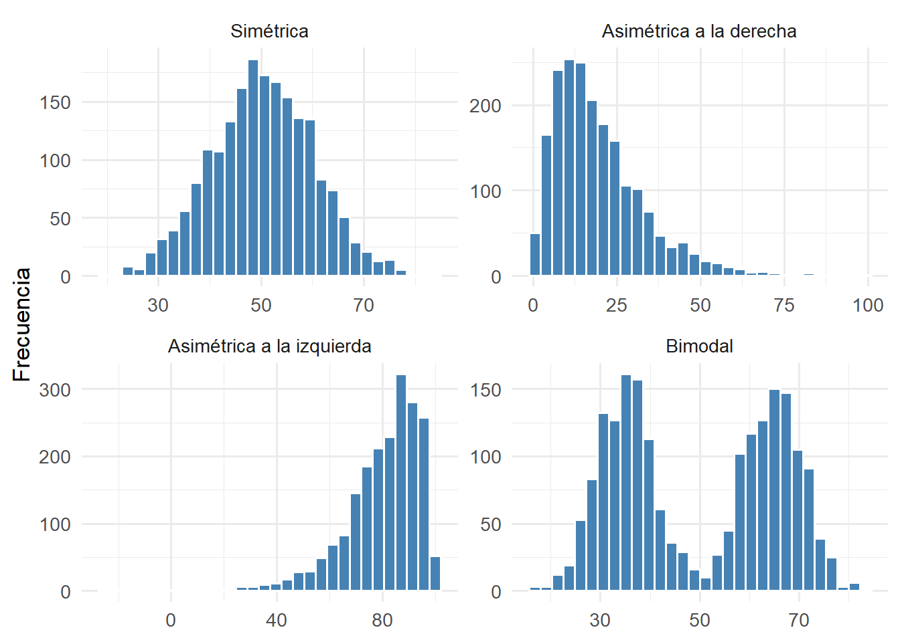
El histograma de los tiempos de desplazamiento (Figura 5) es asimétrico a la derecha: la mayoría de los estudiantes tarda entre 15 y 35 minutos, pero unos pocos, que seguramente viven más lejos, tardan 45 minutos o más. En la sección 7 veremos cómo medir numéricamente esta asimetría.
6.6 Interpretación de tablas y gráficos
Con frecuencia no se dispone de los datos originales, sino de una tabla o un gráfico ya elaborados, por ejemplo en un informe o una noticia. Saber leerlos correctamente es tan importante como saber construirlos.
Ejemplo 7 En una compañía de comunicaciones se registró el tiempo, en minutos, empleado en atender las consultas de 100 clientes. Los resultados se resumen en la Tabla 11, donde cada clase incluye su límite inferior y excluye el superior.
| Tiempo (min) | Frecuencia | Porcentaje | Porcentaje acumulado |
|---|---|---|---|
| [15, 20) | 5 | 5,0 | 5,0 |
| [20, 25) | 19 | 19,0 | 24,0 |
| [25, 30) | 27 | 27,0 | 51,0 |
| [30, 35) | 29 | 29,0 | 80,0 |
| [35, 40) | 7 | 7,0 | 87,0 |
| [40, 45) | 5 | 5,0 | 92,0 |
| [45, 50) | 8 | 8,0 | 100,0 |
| Total | 100 | 100,0 |
- ¿Cuál es la variable de estudio, de qué tipo es y cuál es su escala? El tiempo de atención de una consulta, en minutos. Es cuantitativa continua, medida en escala de razón.
- Si a un cliente lo atendieron en 45 minutos, ¿cuántos clientes de la muestra fueron atendidos en menos tiempo? Con la convención de las clases, 45 minutos pertenece a la clase \([45, 50)\), así que los clientes con menos tiempo son los de las seis primeras clases: el porcentaje acumulado hasta \([40, 45)\) es 92 %, es decir, 92 clientes.
- La compañía quiere dar un regalo a quienes esperaron como mínimo 40 minutos. ¿Qué porcentaje de los clientes lo recibirá? Son los clientes de las clases \([40, 45)\) y \([45, 50)\): \(5 + 8 = 13\), es decir, el 13 %. Equivalentemente, 100 % − 87 % = 13 %.
Observe que la respuesta del literal b depende de la convención sobre los límites. Por eso, al presentar una tabla agrupada, siempre debe quedar claro a qué clase pertenecen los valores que coinciden con un límite.
¿Y el diagrama de caja?
Otro gráfico fundamental para datos cuantitativos es el diagrama de caja y bigotes. Como se construye a partir de los cuartiles, lo estudiaremos en la siguiente sección, después de definir las medidas de posición.
7 Medidas numéricas descriptivas
Las tablas y los gráficos muestran la distribución completa de los datos, pero a menudo se necesita resumirla en unos pocos números que puedan reportarse, compararse y usarse en cálculos posteriores.
Definición 23 (Medida descriptiva) Una medida descriptiva es un valor numérico que resume alguna característica de un conjunto de datos. Si se calcula con los datos de una muestra es un estadístico; si se calcula con los datos de toda la población es un parámetro (véanse la Definición 5 y la Definición 6).
Según la característica que resumen, las medidas descriptivas se clasifican en cuatro grupos (Anderson et al., 2008, p. 81):
- Tendencia central: ¿alrededor de qué valor se ubican los datos?
- Dispersión: ¿qué tan alejados están los datos unos de otros?
- Posición: ¿qué valor deja por debajo cierto porcentaje de los datos?
- Forma: ¿la distribución es simétrica?, ¿tiene colas pesadas?
A lo largo de la sección usaremos, además de ejemplos pequeños para hacer los cálculos a mano, los tiempos de desplazamiento del Ejemplo 4, de modo que pueda compararse cada medida con lo que ya vimos en las tablas y los gráficos.
En las fórmulas, \(x_1, x_2, \ldots, x_n\) denotan los datos de una muestra de tamaño \(n\), y \(x_{(1)} \le x_{(2)} \le \cdots \le x_{(n)}\) los mismos datos ordenados de menor a mayor (el arreglo ordenado); es decir, \(x_{(1)}\) es el mínimo y \(x_{(n)}\) el máximo.
7.1 Medidas de tendencia central
Las medidas de tendencia central son valores alrededor de los cuales los datos tienden a agruparse.
Media aritmética
Definición 24 (Media aritmética) La media muestral (o promedio) de \(x_1, \ldots, x_n\) es \[ \bar{x} = \frac{x_1 + x_2 + \cdots + x_n}{n} = \frac{1}{n}\sum_{i=1}^{n} x_i . \] Si se dispone de los \(N\) datos de toda la población, la media poblacional es \[ \mu = \frac{1}{N}\sum_{i=1}^{N} x_i . \]
La media puede interpretarse como el centro de gravedad de los datos: si cada dato fuera una pesa del mismo peso colocada sobre una regla, la regla quedaría en equilibrio apoyada en \(\bar{x}\). Esto se refleja en una propiedad importante: las desviaciones de los datos respecto a la media siempre suman cero, \[ \sum_{i=1}^{n} (x_i - \bar{x}) = 0 . \]
Para los tiempos de desplazamiento, la suma de los 40 datos es 1154, de modo que \(\bar{x} = 1154/40 = 28{,}85\) minutos.
Cuando no todos los datos tienen la misma importancia se usa la media ponderada, en la que cada dato \(x_i\) se multiplica por un peso \(w_i\): \[ \bar{x}_w = \frac{\sum_{i=1}^{n} w_i x_i}{\sum_{i=1}^{n} w_i} . \]
Ejemplo 8 Un estudiante obtuvo en el semestre las notas de la Tabla 12. Su promedio semestral no es el promedio simple de las notas, sino el promedio ponderado por el número de créditos de cada asignatura.
| Asignatura | Créditos (\(w_i\)) | Nota (\(x_i\)) | \(w_i x_i\) |
|---|---|---|---|
| Cálculo I | 4 | 3,5 | 14,0 |
| Álgebra lineal | 3 | 4,2 | 12,6 |
| Estadística I | 3 | 4,0 | 12,0 |
| Inglés | 2 | 4,8 | 9,6 |
| Total | 12 | 48,2 |
El promedio ponderado es \(\bar{x}_w = 48{,}2/12 = 4{,}02\), mientras que el promedio simple sería \((3{,}5 + 4{,}2 + 4{,}0 + 4{,}8)/4 = 4{,}13\). La diferencia se debe a que la nota más baja corresponde a la asignatura con más créditos.
Mediana
Definición 25 (Mediana) La mediana \(Me\) es el valor que divide el arreglo ordenado en dos partes con el mismo número de datos: al menos la mitad de los datos son menores o iguales que ella y al menos la mitad son mayores o iguales. Se calcula como \[ Me = \begin{cases} x_{\left(\frac{n+1}{2}\right)} & \text{si } n \text{ es impar},\\[2mm] \dfrac{x_{\left(\frac{n}{2}\right)} + x_{\left(\frac{n}{2}+1\right)}}{2} & \text{si } n \text{ es par}. \end{cases} \]
Ejemplo 9 Para hallar la mediana de los datos 54, 21, 53, 33, 10, primero se ordenan: 10, 21, 33, 53, 54. Como \(n = 5\) es impar, la mediana es el dato que ocupa la posición \((5+1)/2 = 3\): \(Me = x_{(3)} = 33\).
Para los tiempos de desplazamiento, \(n = 40\) es par, así que la mediana es el promedio de los datos que ocupan las posiciones 20 y 21 del arreglo ordenado: \(Me = (26 + 27)/2 = 26{,}5\) minutos. La mitad de los estudiantes tarda menos de 26,5 minutos en llegar, un valor muy cercano a la aproximación de 27 minutos que obtuvimos con la ojiva (Figura 7).
Moda
Definición 26 (Moda) La moda \(Mo\) es el valor que se presenta con mayor frecuencia en un conjunto de datos.
Si todos los valores son diferentes, se dice que no hay moda; si varios valores empatan en la frecuencia más alta, el conjunto tiene varias modas (bimodal, trimodal, etc.). La moda es la única medida de tendencia central que sirve para variables nominales, y es muy útil para variables discretas con pocos valores (en el Ejemplo 5, la moda es 1 hermano). En cambio, para variables continuas suele ser poco informativa: en los tiempos de desplazamiento, los valores 18, 20, 24 y 30 se repiten dos veces cada uno, así que hay cuatro modas que no dicen mucho. En ese caso es más útil hablar de la clase modal, la clase de mayor frecuencia en la tabla agrupada, que aquí es \([15, 25)\).
¿Media o mediana?
La media usa el valor de todos los datos, lo que la hace muy sensible a los valores extremos. La mediana solo depende de los datos centrales del arreglo ordenado, de modo que unos pocos valores extremos no la afectan. Por eso se dice que la mediana es una medida robusta (Anderson et al., 2008, p. 85; Devore, 2008, p. 27).
Ejemplo 10 Los salarios mensuales, en millones de pesos, de los seis empleados de una pequeña empresa son 2,0; 2,2; 2,4; 2,5; 2,9 y 15,0 (este último es el del gerente). La media es \(27/6 = 4{,}5\) millones, pero cinco de los seis empleados ganan menos de 3 millones: la media no representa bien el salario típico. La mediana, \((2{,}4 + 2{,}5)/2 = 2{,}45\) millones, sí lo hace. Si se excluyera al gerente, la media bajaría a 2,4 millones y la mediana apenas cambiaría, a 2,4.
Por esta razón, en variables muy asimétricas, como el ingreso de los hogares o el precio de la vivienda, se suele reportar la mediana. Además, la comparación entre media y mediana da una primera pista sobre la forma de la distribución: en los tiempos de desplazamiento, \(\bar{x} = 28{,}85\) es mayor que \(Me = 26{,}5\), porque los pocos estudiantes que tardan mucho “jalan” la media hacia la derecha. Volveremos sobre esto al estudiar la asimetría.
Medidas a partir de una tabla agrupada
Si solo se dispone de la tabla de frecuencias agrupadas, la media puede aproximarse usando las marcas de clase \(x_i\) como representantes de cada clase: \[ \bar{x} \approx \frac{1}{n}\sum_{i=1}^{k} x_i f_i , \qquad s^2 \approx \frac{1}{n-1}\sum_{i=1}^{k} f_i (x_i - \bar{x})^2 . \] Con la Tabla 10 se obtiene \(\bar{x} \approx (10 \cdot 6 + 20 \cdot 12 + 30 \cdot 10 + 40 \cdot 6 + 50 \cdot 4 + 60 \cdot 2)/40 = 29{,}0\) minutos, cercano al valor exacto de 28,85. Cuando se tienen los datos originales, siempre es preferible usarlos.
7.2 Medidas de dispersión
Dos conjuntos de datos pueden tener la misma media y ser muy distintos. Si en dos cursos el promedio de un examen fue 3,5, no es lo mismo que en uno todos hayan sacado entre 3,2 y 3,8 y que en el otro las notas vayan de 1,0 a 5,0. La dispersión se refiere a la variabilidad de los datos: si todos fueran iguales no habría dispersión, y cuanto más se alejen unos de otros, mayor será.
Rango
Definición 27 (Rango) El rango es la diferencia entre el valor máximo y el mínimo: \(R = x_{(n)} - x_{(1)}\).
Es la medida de dispersión más sencilla, pero depende solo de los dos valores extremos, de modo que un único dato atípico puede inflarla. Para los tiempos de desplazamiento, \(R = 64 - 7 = 57\) minutos.
Varianza y desviación estándar
Una idea natural es medir la dispersión a partir de las desviaciones \(x_i - \bar{x}\) de cada dato respecto a la media. Pero, como vimos, esas desviaciones siempre suman cero, porque las positivas se compensan con las negativas. La solución es elevarlas al cuadrado antes de promediarlas.
Definición 28 (Varianza y desviación estándar) La varianza muestral es \[ s^2 = \frac{1}{n-1}\sum_{i=1}^{n} (x_i - \bar{x})^2 , \] y la desviación estándar muestral es su raíz cuadrada, \(s = \sqrt{s^2}\). Para una población de tamaño \(N\) con media \(\mu\), la varianza poblacional y la desviación estándar poblacional son \[ \sigma^2 = \frac{1}{N}\sum_{i=1}^{N} (x_i - \mu)^2 , \qquad \sigma = \sqrt{\sigma^2}. \]
La varianza está expresada en unidades al cuadrado (minutos², pesos²), lo que dificulta su interpretación. La desviación estándar, en cambio, está en las mismas unidades de los datos, y puede leerse como una distancia típica de los datos a la media.
¿Por qué se divide entre n − 1?
En la varianza muestral se divide entre \(n-1\) y no entre \(n\). Una explicación intuitiva es que, como las \(n\) desviaciones deben sumar cero, basta conocer \(n-1\) de ellas para deducir la última: solo \(n-1\) de ellas son “libres”. A ese número se le llama grados de libertad. Además, dividir entre \(n-1\) hace que, en promedio, \(s^2\) no subestime a la varianza poblacional \(\sigma^2\); en el curso de Estadística II veremos que esto significa que \(s^2\) es un estimador insesgado de \(\sigma^2\) (Devore, 2008, p. 233).
Ejemplo 11 Para los datos 54, 21, 53, 33, 10 del Ejemplo 9, la media es \(\bar{x} = 171/5 = 34{,}2\). Los cálculos se organizan en la Tabla 13.
| \(x_i\) | \(x_i - \bar{x}\) | \((x_i - \bar{x})^2\) |
|---|---|---|
| 54 | 19,8 | 392,04 |
| 21 | −13,2 | 174,24 |
| 53 | 18,8 | 353,44 |
| 33 | −1,2 | 1,44 |
| 10 | −24,2 | 585,64 |
| Suma | 0,0 | 1506,80 |
Observe que las desviaciones suman cero, como debe ser. Entonces \[ s^2 = \frac{1506{,}80}{5 - 1} = 376{,}70 \qquad \text{y} \qquad s = \sqrt{376{,}70} = 19{,}41 . \]
Para los tiempos de desplazamiento, \(s^2 = 195{,}57\) minutos² y \(s = 13{,}98\) minutos: en promedio, los tiempos se alejan unos 14 minutos de la media.
La desviación estándar y la forma de campana
Cuando el histograma tiene aproximadamente forma de campana, se cumple una regla práctica muy útil, la regla empírica: cerca del 68 % de los datos está a menos de una desviación estándar de la media, y cerca del 95 % a menos de dos (Anderson et al., 2008, p. 101). En los tiempos de desplazamiento, el intervalo \(\bar{x} \pm s = [14{,}87;\ 42{,}83]\) contiene 27 de los 40 datos (67,5 %) y \(\bar{x} \pm 2s = [0{,}88;\ 56{,}82]\) contiene 38 (95 %), a pesar de que la distribución es algo asimétrica. En el capítulo 3 veremos de dónde salen estos porcentajes, que provienen de la distribución normal.
Coeficiente de variación
La desviación estándar depende de las unidades y de la magnitud de los datos: una desviación de 5 kg es grande si se pesan recién nacidos y pequeña si se pesan camiones. Para comparar la dispersión de conjuntos medidos en unidades distintas, o con medias muy diferentes, se usa una medida relativa.
Definición 29 (Coeficiente de variación) El coeficiente de variación es el cociente entre la desviación estándar y la media, expresado como porcentaje: \[ CV = \frac{s}{\bar{x}} \times 100 . \]
El coeficiente de variación no tiene unidades. Solo tiene sentido para variables en escala de razón con valores positivos (véase la Tabla 4): para la temperatura en °C, por ejemplo, cambiaría arbitrariamente al cambiar la ubicación del cero.
Ejemplo 12 En un grupo de estudiantes, la estatura tiene media 168 cm y desviación estándar 8 cm, y el peso tiene media 65 kg y desviación estándar 11 kg. No es posible comparar 8 cm con 11 kg, pero sí sus coeficientes de variación: \(CV_{\text{estatura}} = 8/168 \times 100 = 4{,}8\) % y \(CV_{\text{peso}} = 11/65 \times 100 = 16{,}9\) %. En términos relativos, el peso es mucho más variable que la estatura.
Para los tiempos de desplazamiento, \(CV = 13{,}98/28{,}85 \times 100 = 48{,}5\) %, una dispersión relativa alta: los tiempos varían mucho de un estudiante a otro.
7.3 Medidas de posición
Las medidas de posición, también llamadas cuantiles, son valores que dividen el arreglo ordenado en partes, no necesariamente iguales, que contienen un porcentaje determinado de los datos. La mediana es la más conocida: deja el 50 % de los datos por debajo.
Definición 30 (Percentiles, deciles y cuartiles) El percentil \(P_k\), con \(0 \le k \le 100\), es un valor tal que, aproximadamente, el \(k\) % de los datos es menor o igual que \(P_k\) y el \((100-k)\) % restante es mayor o igual que \(P_k\). Los nueve deciles \(D_1, \ldots, D_9\) dividen los datos en diez partes iguales, y los tres cuartiles \(Q_1, Q_2, Q_3\) en cuatro partes iguales. Así, \[ D_j = P_{10j}, \qquad Q_1 = P_{25}, \qquad Q_2 = P_{50} = Me, \qquad Q_3 = P_{75}. \]
Para calcular un percentil a partir del arreglo ordenado se usa el siguiente procedimiento:
- Calcular la posición \(p = \dfrac{(n-1)\,k}{100} + 1\).
- Tomar la parte entera \(j = [\![\, p \,]\!]\) (el mayor entero menor o igual que \(p\)).
- Interpolar entre los datos que ocupan las posiciones \(j\) y \(j+1\): \[ P_k = x_{(j)} + (p - j)\left(x_{(j+1)} - x_{(j)}\right). \]
Si \(p\) resulta entero, simplemente \(P_k = x_{(p)}\).
Hay varios métodos
Existen varias formas de calcular percentiles, que pueden dar resultados ligeramente diferentes en muestras pequeñas; en muestras grandes las diferencias son despreciables. El método que presentamos es el que usan por defecto R (función quantile()) y Excel (función PERCENTIL.INC), de modo que sus resultados coincidirán con los de estos programas.
Ejemplo 13 Para los tiempos de desplazamiento (\(n = 40\)):
- Primer cuartil. \(p = 39 \times 25/100 + 1 = 10{,}75\), \(j = 10\). Como \(x_{(10)} = x_{(11)} = 18\), \(Q_1 = 18 + 0{,}75 \times 0 = 18\) minutos.
- Mediana. \(p = 39 \times 50/100 + 1 = 20{,}5\), \(j = 20\): \(Q_2 = 26 + 0{,}5 \times (27 - 26) = 26{,}5\) minutos, el mismo valor que obtuvimos con la fórmula de la mediana.
- Tercer cuartil. \(p = 39 \times 75/100 + 1 = 30{,}25\), \(j = 30\): \(Q_3 = 37 + 0{,}25 \times (39 - 37) = 37{,}5\) minutos.
- Primer y noveno decil. De la misma forma se obtiene \(D_1 = 12{,}9\) y \(D_9 = 48{,}2\) minutos.
Así, aproximadamente el 25 % de los estudiantes tarda 18 minutos o menos, el 75 % tarda 37,5 minutos o menos y solo el 10 % tarda más de 48,2 minutos.
¿“Menos de” o “como máximo”?
La interpretación correcta de un cuartil es “como máximo”, es decir, “menor o igual”. Además, en una muestra los porcentajes casi nunca se cumplen de manera exacta, por eso se dice “aproximadamente”. En los tiempos de desplazamiento hay dos estudiantes que tardan exactamente 18 minutos: 9 de los 40 (22,5 %) tardan menos de 18 minutos y 11 (27,5 %) tardan 18 minutos o menos. Ninguno de los dos porcentajes es exactamente 25 %, pero lo que garantiza el cuartil es que alrededor de una cuarta parte de los datos está en 18 o por debajo, y alrededor de tres cuartas partes en 18 o por encima.
Cuando la variable es continua y hay muchos datos, los empates son raros y la diferencia entre “menos de” y “como máximo” desaparece en la práctica; en el capítulo 3 veremos que, para una variable continua, la probabilidad de tomar exactamente un valor es cero.
A partir de los cuartiles se define una medida de dispersión robusta.
Definición 31 (Rango intercuartílico) El rango intercuartílico es \(RIC = Q_3 - Q_1\). Es la amplitud del intervalo que contiene el 50 % central de los datos.
Para los tiempos de desplazamiento, \(RIC = 37{,}5 - 18 = 19{,}5\) minutos. A diferencia del rango y de la desviación estándar, el RIC no se ve afectado por los valores extremos, de modo que es a la desviación estándar lo que la mediana es a la media (Anderson et al., 2008, p. 92).
7.4 Diagrama de caja y bigotes
El diagrama de caja y bigotes (boxplot), propuesto por Tukey (1977), resume en un solo gráfico la posición, la dispersión y la forma de los datos, y permite detectar valores atípicos (Devore, 2008, p. 35). Se construye así:
- Se dibuja una caja que va de \(Q_1\) a \(Q_3\), con una línea en la mediana. La caja contiene el 50 % central de los datos y su longitud es el RIC.
- Se calculan los límites (o vallas) \(Q_1 - 1{,}5 \cdot RIC\) y \(Q_3 + 1{,}5 \cdot RIC\).
- Se trazan los bigotes desde la caja hasta el dato más pequeño y el dato más grande que estén dentro de los límites.
- Los datos que quedan fuera de los límites se consideran valores atípicos y se marcan individualmente con un punto.
Ejemplo 14 Para los tiempos de desplazamiento, \(Q_1 = 18\), \(Me = 26{,}5\), \(Q_3 = 37{,}5\) y \(RIC = 19{,}5\). Los límites son \(18 - 1{,}5 \times 19{,}5 = -11{,}25\) y \(37{,}5 + 1{,}5 \times 19{,}5 = 66{,}75\). Como todos los datos están entre estos valores, no hay atípicos, y los bigotes llegan hasta el mínimo (7) y el máximo (64). En la Figura 9 se aprecia la asimetría a la derecha: el bigote derecho es más largo que el izquierdo y la mediana está más cerca de \(Q_1\) que de \(Q_3\).
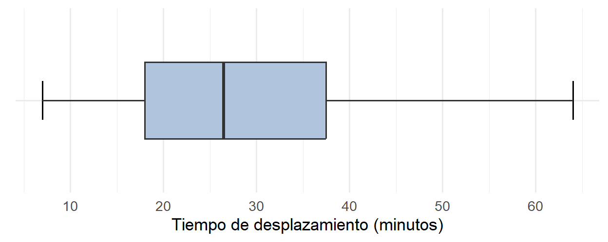
En cambio, en los salarios del Ejemplo 10 el límite superior es 3,63 millones y el salario del gerente, 15 millones, aparece como un valor atípico (Figura 10).
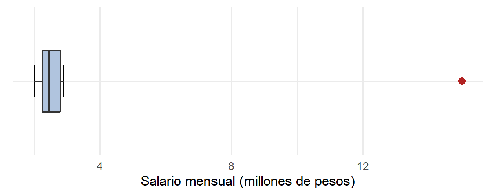
Un valor atípico no es un error
Un valor atípico puede ser un error de digitación o de medición, pero también puede ser un dato correcto e informativo, como el salario del gerente. Nunca debe eliminarse un dato solo por ser atípico: primero hay que averiguar a qué se debe.
El diagrama de caja es especialmente útil para comparar grupos: varias cajas dibujadas una al lado de la otra permiten ver de inmediato diferencias de posición, de dispersión y de forma entre ellos.
7.5 Medidas de forma
En la sección anterior describimos visualmente la forma de una distribución (Figura 8). Las medidas de forma permiten cuantificarla sin necesidad de dibujar el histograma.
Asimetría
En una distribución simétrica, la media, la mediana y la moda coinciden. Cuando hay una cola larga hacia la derecha, los valores extremos de esa cola arrastran la media, que queda por encima de la mediana; con una cola hacia la izquierda ocurre lo contrario (Figura 11). Esta relación es una tendencia habitual, aunque no una regla sin excepciones, sobre todo en distribuciones discretas o multimodales.
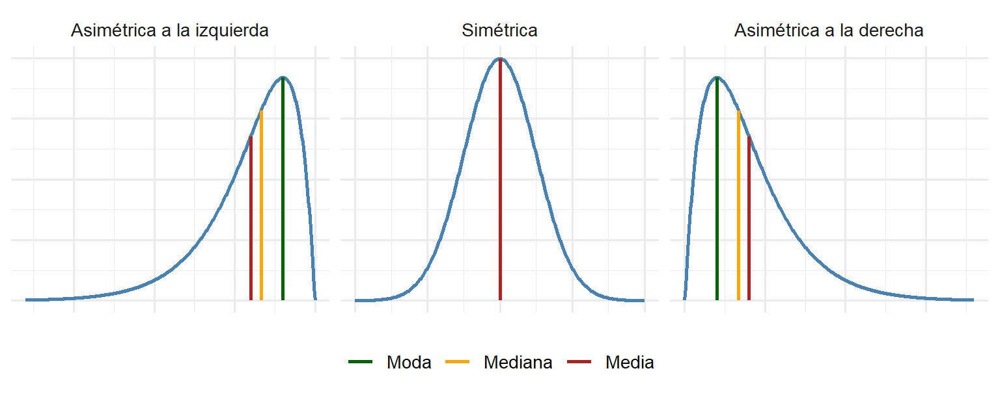
Para medir la asimetría se usan coeficientes de asimetría. Usaremos dos: el coeficiente basado en el tercer momento, en la versión que Joanes & Gill (1998) denotan \(b_1\), y el segundo coeficiente de asimetría de Pearson, \(A_P\) (Doane & Seward, 2011): \[ b_1 = \frac{m_3}{s^3}, \quad \text{con} \quad m_3 = \frac{1}{n}\sum_{i=1}^{n} (x_i - \bar{x})^3, \qquad \text{y} \qquad A_P = \frac{3\,(\bar{x} - Me)}{s} . \]
En \(b_1\), al elevar las desviaciones al cubo se conserva su signo y se amplifican las grandes, de modo que una cola larga hacia la derecha produce un valor positivo. \(A_P\) aprovecha directamente la relación entre la media y la mediana, y su valor siempre está entre \(-3\) y \(3\) (Doane & Seward, 2011). En ambos casos:
- un valor cercano a cero indica una distribución aproximadamente simétrica;
- un valor positivo indica asimetría a la derecha;
- un valor negativo indica asimetría a la izquierda.
Como regla práctica orientativa, valores de \(|b_1|\) menores que 0,5 suelen considerarse compatibles con una distribución aproximadamente simétrica, entre 0,5 y 1 indican asimetría moderada, y mayores que 1 asimetría pronunciada.
Ejemplo 15 Para los tiempos de desplazamiento se obtiene \(b_1 = 0{,}58\) y \(A_P = 3\,(28{,}85 - 26{,}5)/13{,}98 = 0{,}50\). Ambos coeficientes son positivos e indican una asimetría moderada a la derecha, en concordancia con lo que mostraron el histograma, la relación \(\bar{x} > Me\) y el diagrama de caja.
Curtosis
La curtosis compara la forma de la distribución con la de la distribución normal (la “campana de Gauss”, que estudiaremos en el capítulo 3). La medida más utilizada se basa en el cuarto momento; en la versión de Joanes & Gill (1998) que usaremos es \[ b_2 = \frac{m_4}{s^4} - 3, \qquad \text{con} \qquad m_4 = \frac{1}{n}\sum_{i=1}^{n} (x_i - \bar{x})^4 . \] Se resta 3 porque ese es el valor de \(m_4/s^4\) para la distribución normal; así, \(b_2\) mide el exceso de curtosis respecto a la normal, y para ella vale cero. Por eso se clasifica:
- Mesocúrtica, si \(b_2 \approx 0\), como la normal;
- Leptocúrtica, si \(b_2 > 0\);
- Platicúrtica, si \(b_2 < 0\).
Con 3 o con 0
Algunos textos, siguiendo la tradición de Pearson, usan el coeficiente sin restar 3, \(m_4/s^4\), y lo comparan con 3 en lugar de 0. Las dos formas contienen exactamente la misma información; lo importante es saber cuál de ellas calcula el programa que se esté usando (véase la Tabla 14).
¿Qué mide realmente la curtosis?
Tradicionalmente se dice que la curtosis mide qué tan “puntiaguda” o “aplanada” es la distribución. Westfall (2014) muestra que esa interpretación es engañosa: como en \(b_2\) las desviaciones se elevan a la cuarta potencia, su valor depende casi por completo de los datos alejados del centro, no de la forma del pico. Una curtosis alta indica, sobre todo, colas pesadas, es decir, mayor propensión a producir valores extremos o atípicos. En la representación tradicional de la Figura 12, fíjese no solo en la altura del pico sino también en las colas: la curva leptocúrtica, además de más alta en el centro, se mantiene por encima de la normal en los extremos. Tenga en cuenta que en esta representación las curvas también difieren en su dispersión, mientras que la curtosis no depende de la escala de los datos.
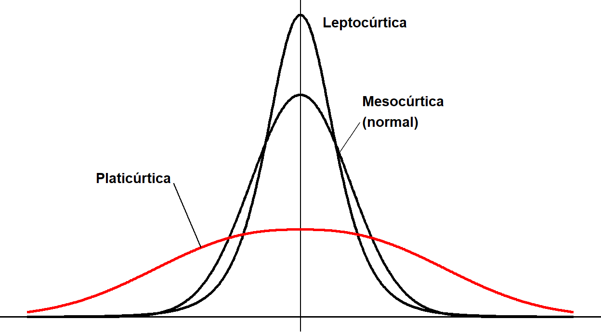
Existe también un coeficiente percentílico de curtosis, basado en cuantiles y por eso menos sensible a los valores extremos (Panik, 2012, Sección 3.10; Spiegel & Stephens, 2009): \[ K = \frac{RIC}{2\,(D_9 - D_1)} , \] donde \(RIC = Q_3 - Q_1\) es el rango intercuartílico (Definición 31). Su valor para la distribución normal es aproximadamente 0,263. Si \(K > 0{,}263\) la distribución se considera leptocúrtica y si \(K < 0{,}263\), platicúrtica.
Ejemplo 16 Para los tiempos de desplazamiento, \(m_4/s^4 = 2{,}58\), de modo que \(b_2 = 2{,}58 - 3 = -0{,}42\), lo que sugeriría una distribución ligeramente platicúrtica, mientras que \(K = 19{,}5/\left(2 \times (48{,}2 - 12{,}9)\right) = 0{,}276\) sugeriría una ligeramente leptocúrtica. Los dos coeficientes no coinciden porque ambos están cerca de sus valores de referencia (0 y 0,263) y porque con solo 40 datos la curtosis se estima con mucha imprecisión. La conclusión razonable es que la distribución no se aparta de manera clara de la curtosis de la normal.
Los coeficientes de forma en el software
Existen varias versiones de los coeficientes de asimetría y de curtosis, que difieren en si se divide entre \(n\) o entre \(n-1\) y en factores de corrección para muestras pequeñas (Doane & Seward, 2011; Joanes & Gill, 1998). Por eso, Excel y R pueden dar valores algo distintos para los mismos datos. Las diferencias se reducen al aumentar \(n\). En la Tabla 14, \(m_2 = \frac{1}{n}\sum (x_i - \bar{x})^2\).
| Versión | Fórmula | Dónde se calcula | Tiempos |
|---|---|---|---|
| \(b_1\) | \(m_3 / s^3\) | R: e1071::skewness() (por defecto) |
0,58 |
| \(g_1\) | \(m_3 / m_2^{3/2}\) | R: moments::skewness() o e1071::skewness(type = 1) |
0,60 |
| \(G_1\) | \(g_1 \sqrt{n(n-1)}/(n-2)\) | Excel: COEFICIENTE.ASIMETRIA; SPSS; e1071::skewness(type = 2) |
0,63 |
| \(b_2\) | \(m_4 / s^4 - 3\) | R: e1071::kurtosis() (por defecto) |
−0,42 |
| \(g_2\) | \(m_4 / m_2^2 - 3\) | R: e1071::kurtosis(type = 1) |
−0,29 |
| \(G_2\) | versión ajustada de \(g_2\) | Excel: CURTOSIS; SPSS; e1071::kurtosis(type = 2) |
−0,16 |
| — | \(m_4 / m_2^2\) (sin restar 3) | R: moments::kurtosis() |
2,71 |
En este curso usamos \(b_1\) y \(b_2\), que son las que calcula por defecto el paquete e1071 de R (Meyer et al., 2024).
7.6 Resumen de las medidas descriptivas
La Tabla 15 reúne las medidas de esta sección, junto con la escala de medida mínima que requieren y su sensibilidad a los valores extremos. En la práctica, un buen resumen numérico combina al menos una medida de tendencia central y una de dispersión elegidas de forma coherente: la media con la desviación estándar cuando la distribución es aproximadamente simétrica, y la mediana con el rango intercuartílico cuando es asimétrica o tiene valores atípicos (Anderson et al., 2008, p. 85).
| Medida | Tipo | Escala mínima | ¿Robusta? | Tiempos de desplazamiento |
|---|---|---|---|---|
| Media | Tendencia central | Intervalo | No | 28,85 min |
| Mediana | Tendencia central | Ordinal | Sí | 26,5 min |
| Moda | Tendencia central | Nominal | Sí | Clase \([15, 25)\) |
| Rango | Dispersión | Intervalo | No | 57 min |
| Desviación estándar | Dispersión | Intervalo | No | 13,98 min |
| Coeficiente de variación | Dispersión | Razón | No | 48,5 % |
| Rango intercuartílico | Dispersión | Intervalo | Sí | 19,5 min |
| Cuartiles y percentiles | Posición | Ordinal | Sí | \(Q_1 = 18\), \(Q_3 = 37{,}5\) |
| \(b_1\), \(A_P\) | Forma (asimetría) | Intervalo | No | 0,58 y 0,50 |
| \(b_2\), \(K\) | Forma (curtosis) | Intervalo | \(b_2\) no, \(K\) sí | −0,42 y 0,276 |
8 Análisis de datos con R
En las secciones anteriores construimos tablas, gráficos y medidas descriptivas a mano, para entender qué significa cada uno. En la práctica, sin embargo, los datos reales tienen cientos o miles de observaciones, y ese trabajo se hace con software. En este curso usaremos R, un lenguaje y entorno para el análisis estadístico y la elaboración de gráficos (R Core Team, 2024), a través de RStudio, un programa que facilita su uso (Posit team, 2025).
R tiene varias ventajas que explican que hoy sea una de las herramientas más usadas en universidades, empresas y entidades públicas: es gratuito y de código abierto, funciona en Windows, macOS y Linux, cuenta con miles de paquetes que amplían sus capacidades para casi cualquier área, y permite que un análisis sea reproducible: el código queda escrito, de modo que cualquier persona puede repetirlo y obtener los mismos resultados (Wickham et al., 2023).
8.1 Instalación de R y RStudio
R y RStudio son dos programas distintos: R es el “motor” que hace los cálculos y RStudio es la “cabina” desde la que lo manejamos. Por eso deben instalarse los dos, y en este orden:
- Instalar R. Entre a la página del proyecto R, el CRAN (https://cran.r-project.org), elija su sistema operativo (por ejemplo, Download R for Windows → base) y descargue e instale la versión más reciente, aceptando las opciones predeterminadas.
- Instalar RStudio. Entre a https://posit.co/download/rstudio-desktop/, descargue RStudio Desktop para su sistema operativo e instálelo.
- Abrir RStudio (no R). RStudio detecta automáticamente la instalación de R.
¿Sin computador propio?
Si no puede instalar los programas, puede usar Posit Cloud (https://posit.cloud), una versión de RStudio que funciona desde el navegador, con una cuenta gratuita. También están instalados en las salas de cómputo de la universidad.
8.2 El entorno de RStudio: las cuatro ventanas
Al abrir RStudio, la pantalla se divide en cuatro ventanas o paneles, cuya ubicación predeterminada se muestra, numerada, en la Figura 13.

- Editor de código (Source), arriba a la izquierda. Es donde se escriben los scripts: archivos de texto con extensión
.Rque contienen las órdenes del análisis. Lo que se escribe aquí no se ejecuta automáticamente; se puede guardar, corregir y volver a usar. Si no aparece, se abre con File → New File → R Script. - Consola (Console), abajo a la izquierda. Es donde R ejecuta las órdenes y muestra los resultados. Se puede escribir directamente en ella, después del símbolo
>, pero lo que se escribe allí no queda guardado. - Entorno e historial (Environment, History), arriba a la derecha. La pestaña Environment muestra los objetos que se han creado (datos, vectores, tablas) y History las órdenes ejecutadas.
- Archivos, gráficos, paquetes y ayuda, abajo a la derecha. Tiene varias pestañas: Files (las carpetas y archivos del computador), Plots (los gráficos), Packages (los paquetes instalados), Help (la ayuda de R) y Viewer.
La forma recomendada de trabajar es escribir siempre el código en un script y ejecutarlo desde allí: se ubica el cursor en una línea (o se seleccionan varias) y se presiona Ctrl + Enter (en macOS, Cmd + Enter). La orden se envía a la consola y el resultado aparece debajo. Todo lo que en una línea va después del símbolo # es un comentario: R lo ignora, y sirve para explicar el código.
En la sección sobre el directorio de trabajo veremos cómo organizar una carpeta y un proyecto de RStudio para el curso.
8.3 Primeros pasos: R como calculadora
La forma más sencilla de usar R es como una calculadora. Escriba en un script las siguientes órdenes y ejecútelas una por una:
2 + 3 # suma[1] 510 - 4 # resta[1] 66 * 7 # multiplicación[1] 4215 / 4 # división[1] 3.752^10 # potencia[1] 102417 %/% 5 # división entera[1] 317 %% 5 # residuo de la división[1] 2El [1] que aparece antes de cada resultado indica que es el primer elemento de la respuesta; más adelante veremos respuestas con varios elementos. R respeta la jerarquía usual de las operaciones (primero potencias, luego multiplicaciones y divisiones, y por último sumas y restas), y se pueden usar paréntesis para cambiar el orden:
2 + 3 * 4[1] 14(2 + 3) * 4[1] 20R tiene muchas funciones matemáticas. Una función se escribe con su nombre seguido de paréntesis, dentro de los cuales van sus argumentos, separados por comas:
sqrt(49) # raíz cuadrada[1] 7exp(1) # número e[1] 2.718282log(100) # logaritmo natural[1] 4.60517log10(100) # logaritmo en base 10[1] 2log(8, base = 2) # logaritmo en base 2[1] 3abs(-3.5) # valor absoluto[1] 3.5round(3.14159, 2) # redondeo a 2 decimales[1] 3.14factorial(5) # 5! = 120[1] 120choose(5, 2) # combinaciones de 5 en 2 (capítulo 2)[1] 10
El separador decimal en R es el punto
En Colombia es común escribir los decimales con coma (3,5), pero en R el separador decimal es siempre el punto (3.5). La coma se usa para separar los argumentos de una función. Escribir round(3,14159, 2) produce un error o un resultado distinto del esperado.
Para guardar un resultado y usarlo después, se le asigna un nombre con el operador <- (se escribe rápidamente con Alt + -). El objeto creado aparece en la pestaña Environment:
radio <- 3
area <- pi * radio^2
area[1] 28.27433Los nombres de los objetos pueden contener letras, números, puntos y guiones bajos, pero deben empezar por una letra y no pueden tener espacios. R distingue mayúsculas de minúsculas: area y Area son objetos distintos. Es buena práctica usar nombres descriptivos, sin tildes ni eñes, como tiempo_promedio.
Para consultar la ayuda de una función se escribe ? seguido de su nombre, por ejemplo ?mean; la documentación aparece en la pestaña Help.
8.4 Paquetes
Cuando se instala R, viene con un conjunto de funciones básicas, el llamado R base, que ya incluye la mayoría de las herramientas de este capítulo: mean(), table(), hist(), boxplot() y muchas más. Pero una de las mayores fortalezas de R es que cualquier persona puede crear funciones nuevas y compartirlas con la comunidad. Esas funciones se distribuyen en paquetes.
Definición 32 (Paquete de R) Un paquete es un conjunto de funciones, datos y documentación que amplía lo que R puede hacer. Los paquetes oficiales se publican en el CRAN (Comprehensive R Archive Network), el mismo repositorio desde el que se descarga R, que reúne más de veinte mil paquetes revisados para casi cualquier área: economía, ingeniería, salud, biología, ciencias sociales y más.
Una buena analogía es la de un teléfono celular: R es el teléfono, y los paquetes son las aplicaciones. Igual que con una aplicación, para usar un paquete hay que hacer dos cosas distintas:
- Instalarlo, es decir, descargarlo de internet y guardarlo en el computador. Se hace una sola vez en cada computador (o cuando se quiere actualizar el paquete).
- Cargarlo, es decir, “abrirlo” para poder usar sus funciones. Se hace cada vez que se abre R, normalmente en las primeras líneas del script.
Cómo instalar un paquete
Hay dos formas equivalentes de instalar paquetes:
- Con código, usando la función
install.packages()en la consola, con el nombre del paquete entre comillas. Para instalar varios a la vez, se reúnen sus nombres conc(). - Con el ratón, desde la pestaña Packages del panel inferior derecho: se pulsa el botón Install, se escriben los nombres de los paquetes separados por comas, se deja marcada la opción Install dependencies y se pulsa Install. RStudio escribe por usted la orden
install.packages()en la consola.
Durante la instalación aparecen en la consola varios mensajes en rojo o en inglés; eso es normal y no indica un error. Algunos paquetes necesitan a su vez otros paquetes, llamados dependencias, que R descarga automáticamente, así que la instalación puede tardar unos minutos. Al final debe aparecer un mensaje similar a package 'readxl' successfully unpacked, o The downloaded binary packages are in....
Cómo cargar un paquete
Un paquete instalado se carga con la función library(), con el nombre del paquete, esta vez sin comillas:
library(readxl)Si la orden se ejecuta sin mostrar nada, el paquete quedó cargado. Si aparece el mensaje Error in library(readxl): there is no package called 'readxl', significa que el paquete no está instalado, o que el nombre está mal escrito (R distingue mayúsculas de minúsculas).
También es posible usar una función de un paquete sin cargarlo, escribiendo el nombre del paquete, dos veces dos puntos y el nombre de la función, por ejemplo readxl::read_excel(). Esta notación es útil para dejar claro de qué paquete viene cada función.
Actividad: instale los paquetes del curso
En este capítulo usaremos tres paquetes:
| Paquete | Para qué lo usaremos |
|---|---|
readxl |
Importar datos desde archivos de Excel |
ggplot2 |
Construir gráficos de alta calidad |
e1071 |
Calcular los coeficientes de asimetría y de curtosis |
Siga estos pasos ahora, con conexión a internet:
Abra RStudio.
Copie en la consola la siguiente orden y presione Enter:
install.packages(c("readxl", "ggplot2", "e1071"))Espere a que termine la instalación, es decir, a que vuelva a aparecer el símbolo
>en la consola.Verifique que todo quedó bien cargando los tres paquetes:
library(readxl) library(ggplot2) library(e1071)Si ninguna de las tres órdenes muestra un error, los paquetes quedaron instalados. También puede buscarlos en la pestaña Packages: deben aparecer en la lista.
La instalación solo hay que hacerla una vez. De aquí en adelante, en cada sesión de trabajo bastará con las tres líneas de library().
¿Por qué install.packages() no va en el script?
La orden install.packages() conviene escribirla directamente en la consola y no dejarla en el script del análisis: si quedara en el script, el paquete se volvería a descargar cada vez que se ejecute el código. En el script, en cambio, sí deben ir las líneas library() al comienzo, para que cualquier persona que lo abra sepa qué paquetes necesita. Para ver qué versión de un paquete tiene instalada puede usar, por ejemplo, packageVersion("ggplot2"), y para actualizar todos sus paquetes, el botón Update de la pestaña Packages.
8.5 Estructuras de datos
R guarda la información en distintos tipos de objetos, llamados estructuras de datos. Las más importantes para este curso son los vectores, los factores, las matrices, los arreglos, las listas y los data frames.
Vectores
Un vector es una colección de elementos del mismo tipo. Se crea con la función c() (de combinar):
notas <- c(3.5, 4.2, 4.0, 4.8, 2.9) # numérico
carreras <- c("Economía", "Química", "Física") # de texto
aprobo <- notas >= 3 # lógico
notas[1] 3.5 4.2 4.0 4.8 2.9carreras[1] "Economía" "Química" "Física" aprobo[1] TRUE TRUE TRUE TRUE FALSEclass(notas)[1] "numeric"class(carreras)[1] "character"class(aprobo)[1] "logical"Hay formas rápidas de crear vectores con patrones:
1:10 # enteros consecutivos [1] 1 2 3 4 5 6 7 8 9 10seq(0, 1, by = 0.25) # secuencia con un paso dado[1] 0.00 0.25 0.50 0.75 1.00rep(c("A", "B"), times = 3) # repetición[1] "A" "B" "A" "B" "A" "B"Para acceder a los elementos de un vector se usan corchetes [ ] con la posición, o una condición:
notas[2] # segundo elemento[1] 4.2notas[c(1, 3)] # primero y tercero[1] 3.5 4.0notas[-1] # todos menos el primero[1] 4.2 4.0 4.8 2.9notas[notas >= 4] # los que cumplen una condición[1] 4.2 4.0 4.8Las operaciones con vectores se aplican elemento a elemento, y muchas funciones reciben un vector completo:
notas + 0.2 # suma 0.2 a cada nota[1] 3.7 4.4 4.2 5.0 3.1length(notas) # número de elementos[1] 5sum(notas) # suma[1] 19.4mean(notas) # media[1] 3.88sort(notas) # arreglo ordenado[1] 2.9 3.5 4.0 4.2 4.8sum(aprobo) # cuántos aprobaron (TRUE cuenta como 1)[1] 4Si se mezclan tipos, R convierte todo al tipo más general, que suele ser texto; por ejemplo, c(1, "a", TRUE) produce un vector de texto. Los datos faltantes se representan con NA, y muchas funciones necesitan el argumento na.rm = TRUE para ignorarlos:
mean(c(4, NA, 5))[1] NAmean(c(4, NA, 5), na.rm = TRUE)[1] 4.5Factores
Un factor es la forma en que R guarda una variable cualitativa. Sus posibles valores se llaman niveles (levels). Si la variable es ordinal, se crea un factor ordenado. Esto es importante porque, si no se lo indicamos, R puede tratar como número algo que en realidad es una categoría. Construyamos la matriz de datos de la Tabla 3:
estudiantes <- data.frame(
carrera = c("Ingeniería Civil", "Economía", "Química",
"Economía", "Ingeniería Civil", "Física"),
estrato = c(3, 2, 4, 3, 1, 2),
creditos = c(18, 16, 20, 15, 18, 17),
estatura = c(172.4, 160.1, 168.9, 175.0, 158.3, 181.2)
)
str(estudiantes)'data.frame': 6 obs. of 4 variables:
$ carrera : chr "Ingeniería Civil" "Economía" "Química" "Economía" ...
$ estrato : num 3 2 4 3 1 2
$ creditos: num 18 16 20 15 18 17
$ estatura: num 172 160 169 175 158 ...La función str() muestra la estructura: carrera aparece como texto (chr) y las otras tres como números (num). Así, R nos deja calcular sin protestar un “estrato promedio”, que no tiene una interpretación clara porque el estrato es una variable ordinal:
mean(estudiantes$estrato)[1] 2.5Para que R trate cada variable según su escala, se convierten al tipo adecuado:
estudiantes$carrera <- factor(estudiantes$carrera)
estudiantes$estrato <- factor(estudiantes$estrato, levels = 1:6,
ordered = TRUE)
str(estudiantes)'data.frame': 6 obs. of 4 variables:
$ carrera : Factor w/ 4 levels "Economía","Física",..: 3 1 4 1 3 2
$ estrato : Ord.factor w/ 6 levels "1"<"2"<"3"<"4"<..: 3 2 4 3 1 2
$ creditos: num 18 16 20 15 18 17
$ estatura: num 172 160 169 175 158 ...levels(estudiantes$estrato)[1] "1" "2" "3" "4" "5" "6"summary(estudiantes) carrera estrato creditos estatura
Economía :2 1:1 Min. :15.00 Min. :158.3
Física :1 2:2 1st Qu.:16.25 1st Qu.:162.3
Ingeniería Civil:2 3:2 Median :17.50 Median :170.7
Química :1 4:1 Mean :17.33 Mean :169.3
5:0 3rd Qu.:18.00 3rd Qu.:174.3
6:0 Max. :20.00 Max. :181.2 Ahora summary() resume cada variable según su tipo: para las categóricas cuenta cuántas unidades hay en cada categoría y para las numéricas calcula el mínimo, los cuartiles, la media y el máximo. La Tabla 16 resume la correspondencia entre las escalas de medida y los tipos de R.
| Escala de medida | Tipo en R |
|---|---|
| Nominal | factor |
| Ordinal | factor con ordered = TRUE |
| Intervalo o razón | numeric (o integer si es un conteo) |
Matrices
Una matriz es un conjunto de elementos del mismo tipo organizados en filas y columnas. Se crea con matrix(), indicando los datos y el número de filas o de columnas. Por defecto, R llena la matriz por columnas; con byrow = TRUE la llena por filas:
A <- matrix(1:6, nrow = 2)
A [,1] [,2] [,3]
[1,] 1 3 5
[2,] 2 4 6B <- matrix(1:6, nrow = 2, byrow = TRUE)
B [,1] [,2] [,3]
[1,] 1 2 3
[2,] 4 5 6dim(A) # dimensiones: filas y columnas[1] 2 3A[2, 3] # elemento de la fila 2, columna 3[1] 6A[1, ] # fila 1 completa[1] 1 3 5A[, 2] # columna 2 completa[1] 3 4t(A) # transpuesta [,1] [,2]
[1,] 1 2
[2,] 3 4
[3,] 5 6A * B # producto elemento a elemento [,1] [,2] [,3]
[1,] 1 6 15
[2,] 8 20 36A %*% t(B) # producto matricial [,1] [,2]
[1,] 22 49
[2,] 28 64Las tablas de contingencia son matrices. Por ejemplo, la Tabla 7 se puede escribir así, con nombres para las filas y las columnas:
fumar <- matrix(c(65, 43, 58, 67), nrow = 2,
dimnames = list(Fuma = c("Sí", "No"),
Genero = c("Hombre", "Mujer")))
fumar Genero
Fuma Hombre Mujer
Sí 65 58
No 43 67addmargins(fumar) # agrega los totales Genero
Fuma Hombre Mujer Sum
Sí 65 58 123
No 43 67 110
Sum 108 125 233round(100 * prop.table(fumar, margin = 2), 1) # porcentajes por columna Genero
Fuma Hombre Mujer
Sí 60.2 46.4
No 39.8 53.6Con prop.table(), el argumento margin = 1 calcula porcentajes por fila, margin = 2 por columna, y si se omite, respecto al total general: son las tres formas de leer una tabla de contingencia que vimos en el Ejemplo 3.
Arreglos
Un arreglo (array) generaliza la matriz a más de dos dimensiones: filas, columnas y “capas”. Se crea con array(), indicando sus dimensiones:
arreglo <- array(1:24, dim = c(2, 3, 4)) # 2 filas, 3 columnas, 4 capas
dim(arreglo)[1] 2 3 4arreglo[2, 3, 1] # fila 2, columna 3, capa 1[1] 6arreglo[, , 2] # la capa 2 completa (una matriz) [,1] [,2] [,3]
[1,] 7 9 11
[2,] 8 10 12Un uso natural de los arreglos es la tabla de contingencia de tres variables cualitativas: por ejemplo, síntoma, género y edad en el ejercicio 5, donde cada capa sería una tabla de síntoma por género para un grupo de edad.
Listas
Una lista agrupa objetos que pueden ser de tipos y tamaños distintos. Muchas funciones de R entregan sus resultados en forma de lista:
estudiante <- list(nombre = "Ana", semestre = 3,
notas = c(4.1, 3.8, 4.5))
estudiante$notas[1] 4.1 3.8 4.5mean(estudiante$notas)[1] 4.133333Data frames
Un data frame es la estructura de R para una matriz de datos: cada fila es una unidad de observación y cada columna una variable, y, a diferencia de una matriz, cada columna puede ser de un tipo distinto. Es la estructura que usaremos casi siempre. Con el data frame estudiantes que creamos antes:
nrow(estudiantes) # número de filas[1] 6ncol(estudiantes) # número de columnas[1] 4names(estudiantes) # nombres de las variables[1] "carrera" "estrato" "creditos" "estatura"estudiantes$estatura # una columna (un vector)[1] 172.4 160.1 168.9 175.0 158.3 181.2estudiantes[2, ] # la fila 2 carrera estrato creditos estatura
2 Economía 2 16 160.1estudiantes[, c("carrera", "estatura")] # dos columnas carrera estatura
1 Ingeniería Civil 172.4
2 Economía 160.1
3 Química 168.9
4 Economía 175.0
5 Ingeniería Civil 158.3
6 Física 181.2estudiantes[estudiantes$creditos >= 18, ] # filas que cumplen una condición carrera estrato creditos estatura
1 Ingeniería Civil 3 18 172.4
3 Química 4 20 168.9
5 Ingeniería Civil 1 18 158.3estudiantes$estatura_m <- estudiantes$estatura / 100 # nueva columna
head(estudiantes, 3) # primeras 3 filas carrera estrato creditos estatura estatura_m
1 Ingeniería Civil 3 18 172.4 1.724
2 Economía 2 16 160.1 1.601
3 Química 4 20 168.9 1.689El operador $ permite extraer una variable del data frame por su nombre, y la notación [filas, columnas] seleccionar filas y columnas; si una de las dos se deja vacía, se toman todas.
| Estructura | Dimensiones | ¿Elementos del mismo tipo? | Se crea con | Uso típico |
|---|---|---|---|---|
| Vector | 1 | Sí | c(), seq() |
Los datos de una variable |
| Factor | 1 | Sí (categorías) | factor() |
Una variable cualitativa |
| Matriz | 2 | Sí | matrix() |
Tablas de contingencia, álgebra |
| Arreglo | 2 o más | Sí | array() |
Tablas de tres o más variables |
| Lista | 1 | No | list() |
Resultados de funciones |
| Data frame | 2 | No (cada columna, el suyo) | data.frame() |
Una base de datos |
8.6 El directorio de trabajo
Antes de importar datos hay que decirle a R dónde buscarlos. Para eso existe el directorio de trabajo (working directory): la carpeta del computador desde la cual R lee y en la cual guarda los archivos. Cuando se le pide a R que lea "encuesta_estudiantes.xlsx", lo busca en esa carpeta; si el archivo está en otra parte, R responde con un error.
Para ver cuál es el directorio de trabajo actual se usa getwd() (get working directory):
getwd()En Windows, si no se ha cambiado, suele ser la carpeta Documentos ("C:/Users/USUARIO/Documents"), y probablemente sus datos no están ahí. Por eso, al empezar el curso conviene organizar una carpeta propia.
Actividad: cree su directorio de trabajo
Cree una carpeta para el curso, por ejemplo en Documentos, con el nombre
Estadistica1(sin espacios ni tildes).Dentro de ella, cree una subcarpeta llamada
datos.Descargue las bases de datos del curso y guárdelas en la carpeta
datos: encuesta_estudiantes.xlsx, trastornos_alimentarios.xlsx consumo_energia.csv y pizza_delivery.xlsx.Convierta la carpeta en un proyecto de RStudio: File → New Project → Existing Directory, pulse Browse…, elija la carpeta
Estadistica1y pulse Create Project. RStudio se reinicia dentro del proyecto y fija esa carpeta como directorio de trabajo.Verifique en la consola:
getwd() # debe terminar en .../Estadistica1 list.files("datos") # debe mostrar los cuatro archivos
Desde ahora, cada vez que vaya a trabajar en el curso, abra el proyecto (con doble clic en el archivo Estadistica1.Rproj o desde File → Recent Projects) y R sabrá dónde están sus datos.
Con el proyecto abierto, los archivos se leen con una ruta relativa, es decir, a partir del directorio de trabajo: "datos/encuesta_estudiantes.xlsx" significa “el archivo encuesta_estudiantes.xlsx que está en la carpeta datos del directorio de trabajo”. La gran ventaja es que el script funciona en cualquier computador donde exista esa misma organización de carpetas, sin cambiar nada.
¿Por qué se escribe datos/ en la ruta?
El directorio de trabajo es la carpeta Estadistica1, pero los archivos no están sueltos en ella, sino dentro de su subcarpeta datos. Por eso la ruta debe indicar ese paso intermedio: "datos/encuesta_estudiantes.xlsx". Si hubiera guardado el archivo directamente en Estadistica1, bastaría con escribir "encuesta_estudiantes.xlsx".
¿Para qué, entonces, la subcarpeta? Para mantener el trabajo organizado. A lo largo del curso se acumularán bases de datos, scripts, gráficos e informes, y conviene separarlos, por ejemplo así:
Estadistica1/
├── Estadistica1.Rproj
├── datos/ ← bases de datos originales (no se modifican)
├── scripts/ ← archivos .R con el código de cada clase
└── resultados/ ← gráficos y tablas que se exportanAsí los datos originales quedan protegidos y separados del código, se encuentra rápido cada archivo y, si se comparte la carpeta completa con un compañero o con el profesor, el código funciona sin modificaciones.
Otra forma: fijar el directorio a mano. Si no usa proyectos, puede cambiar el directorio de trabajo con Session → Set Working Directory → Choose Directory…, o con la función setwd() (set working directory):
setwd("C:/Users/USUARIO/Documents/Estadistica1")
Errores frecuentes con las rutas
- Las barras en Windows. Windows escribe las rutas con barra invertida (
C:\Users\...), pero en R la barra invertida tiene otro significado. Hay que escribir las rutas con barra normal ("C:/Users/USUARIO/...") o con barra invertida doble ("C:\\Users\\USUARIO\\..."). - “No such file or directory” o “path does not exist”. R no encuentra el archivo. Revise con
getwd()en qué carpeta está trabajando, conlist.files("datos")qué archivos hay, y que el nombre esté escrito exactamente igual, incluida la extensión (.xlsx,.csv). - Rutas absolutas en el script. Una orden como
setwd("C:/Users/USUARIO/...")solo funciona en su computador. Por eso se recomienda trabajar con proyectos y rutas relativas.
8.7 Importar datos
Rara vez se digitan los datos dentro de R: lo usual es que estén en un archivo de Excel o en un archivo de texto. Para los ejemplos de esta sección usaremos el archivo encuesta_estudiantes.xlsx, que usted guardó en la carpeta datos de su directorio de trabajo. Contiene información de 40 estudiantes: un identificador, la carrera, el estrato, el medio de transporte que usan para llegar a la universidad, el número de hermanos y el tiempo de desplazamiento en minutos, que es la variable del Ejemplo 4.
Desde Excel. Se usa la función read_excel() del paquete readxl, indicando la ruta del archivo y, si tiene varias hojas, el nombre o el número de la hoja:
library(readxl)
encuesta <- read_excel("datos/encuesta_estudiantes.xlsx", sheet = "encuesta")
str(encuesta)tibble [40 × 6] (S3: tbl_df/tbl/data.frame)
$ id : num [1:40] 1 2 3 4 5 6 7 8 9 10 ...
$ carrera : chr [1:40] "Ingeniería Civil" "Medicina" "Química" "Medicina" ...
$ estrato : num [1:40] 4 3 3 3 3 4 2 3 4 3 ...
$ transporte: chr [1:40] "Bicicleta" "Bus" "Bicicleta" "Moto" ...
$ hermanos : num [1:40] 0 1 1 1 2 1 2 3 2 0 ...
$ tiempo : num [1:40] 14 48 20 26 23 18 39 28 17 20 ...head(encuesta)# A tibble: 6 × 6
id carrera estrato transporte hermanos tiempo
<dbl> <chr> <dbl> <chr> <dbl> <dbl>
1 1 Ingeniería Civil 4 Bicicleta 0 14
2 2 Medicina 3 Bus 1 48
3 3 Química 3 Bicicleta 1 20
4 4 Medicina 3 Moto 1 26
5 5 Ingeniería Civil 3 Moto 2 23
6 6 Física 4 A pie 1 18Después de importar, conviene revisar siempre que el número de filas y columnas sea el esperado y que cada variable haya quedado con el tipo correcto. Aquí estrato quedó como número, así que lo convertimos en factor ordenado, y carrera y transporte en factores:
encuesta$carrera <- factor(encuesta$carrera)
encuesta$transporte <- factor(encuesta$transporte)
encuesta$estrato <- factor(encuesta$estrato, levels = 1:6, ordered = TRUE)
summary(encuesta) id carrera estrato transporte
Min. : 1.00 Administración de Empresas:6 1: 4 A pie : 6
1st Qu.:10.75 Economía :5 2:10 Bicicleta: 5
Median :20.50 Física :4 3:17 Bus :16
Mean :20.50 Ingeniería Civil :6 4: 8 Carro : 3
3rd Qu.:30.25 Ingeniería de Sistemas :7 5: 0 Moto :10
Max. :40.00 Medicina :7 6: 1
Química :5
hermanos tiempo
Min. :0.00 Min. : 7.00
1st Qu.:1.00 1st Qu.:18.00
Median :1.00 Median :26.50
Mean :1.55 Mean :28.85
3rd Qu.:2.00 3rd Qu.:37.50
Max. :3.00 Max. :64.00
Desde un archivo CSV. Los archivos CSV (valores separados por comas) son archivos de texto que cualquier programa puede leer. Se importan con read.csv(). Cuando el archivo se guardó desde un Excel configurado en español, suele usar punto y coma como separador y coma decimal; en ese caso se usa read.csv2():
consumo <- read.csv("datos/consumo_energia.csv")
str(consumo)'data.frame': 30 obs. of 2 variables:
$ hogar : int 1 2 3 4 5 6 7 8 9 10 ...
$ consumo_kwh: int 112 145 98 176 134 160 121 189 152 140 ...consumo <- read.csv2("datos/consumo_energia.csv") # separador ; y coma decimalTambién se puede importar con el ratón, desde la pestaña Environment: Import Dataset → From Excel…. RStudio muestra una vista previa de los datos y escribe el código correspondiente, que conviene copiar al script para que el análisis quede documentado.
Cómo preparar una base de datos en Excel
Muchos problemas al importar se evitan preparando bien el archivo (Wickham, 2014): una sola tabla por hoja, empezando en la celda A1; una fila de encabezados con nombres cortos, sin espacios, tildes ni eñes (por ejemplo, tiempo_min en lugar de Tiempo (minutos)); una fila por unidad de observación y una columna por variable; sin celdas combinadas, sin totales ni comentarios dentro de la tabla, y las celdas sin dato vacías.
8.8 Análisis descriptivo con R
Con la base importada, reproduzcamos los análisis de las secciones anteriores. Como la variable tiempo contiene los mismos datos del Ejemplo 4, puede comprobar que R da los mismos resultados que obtuvimos a mano.
Variables cualitativas
La función table() construye la tabla de frecuencias absolutas y prop.table() la de frecuencias relativas:
fi <- table(encuesta$transporte)
fi
A pie Bicicleta Bus Carro Moto
6 5 16 3 10 prop.table(fi) # frecuencias relativas
A pie Bicicleta Bus Carro Moto
0.150 0.125 0.400 0.075 0.250 round(100 * prop.table(fi), 1) # porcentajes
A pie Bicicleta Bus Carro Moto
15.0 12.5 40.0 7.5 25.0 sort(fi, decreasing = TRUE) # ordenada de mayor a menor
Bus Moto A pie Bicicleta Carro
16 10 6 5 3 names(fi)[fi == max(fi)] # la moda[1] "Bus"Para una variable ordinal, como el estrato, también tienen sentido las frecuencias acumuladas, que se obtienen con cumsum(). Podemos reunir todo en una tabla de frecuencias completa:
fi <- table(encuesta$estrato)
tabla_estrato <- data.frame(
estrato = names(fi),
fi = as.vector(fi),
hi = round(as.vector(prop.table(fi)), 3),
Fi = cumsum(as.vector(fi)),
Hi = round(cumsum(as.vector(prop.table(fi))), 3)
)
tabla_estrato estrato fi hi Fi Hi
1 1 4 0.100 4 0.100
2 2 10 0.250 14 0.350
3 3 17 0.425 31 0.775
4 4 8 0.200 39 0.975
5 5 0 0.000 39 0.975
6 6 1 0.025 40 1.000Observe que el estrato 5 aparece con frecuencia cero: como definimos los niveles de 1 a 6, R incluye todas las categorías posibles aunque no haya datos en alguna.
Los diagramas de barras y circulares se obtienen con barplot() y pie():
barplot(sort(table(encuesta$transporte), decreasing = TRUE),
col = "steelblue",
main = "Medio de transporte",
ylab = "Frecuencia absoluta")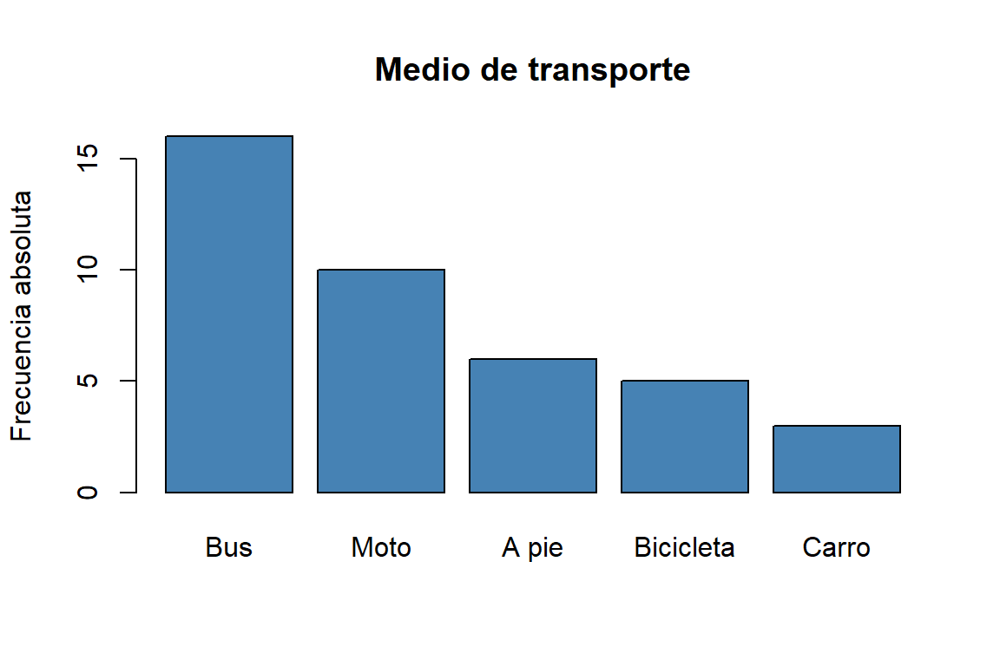
fi <- table(encuesta$transporte)
etiquetas <- paste0(names(fi), " (", round(100 * prop.table(fi), 1), " %)")
pie(fi, labels = etiquetas, main = "Medio de transporte")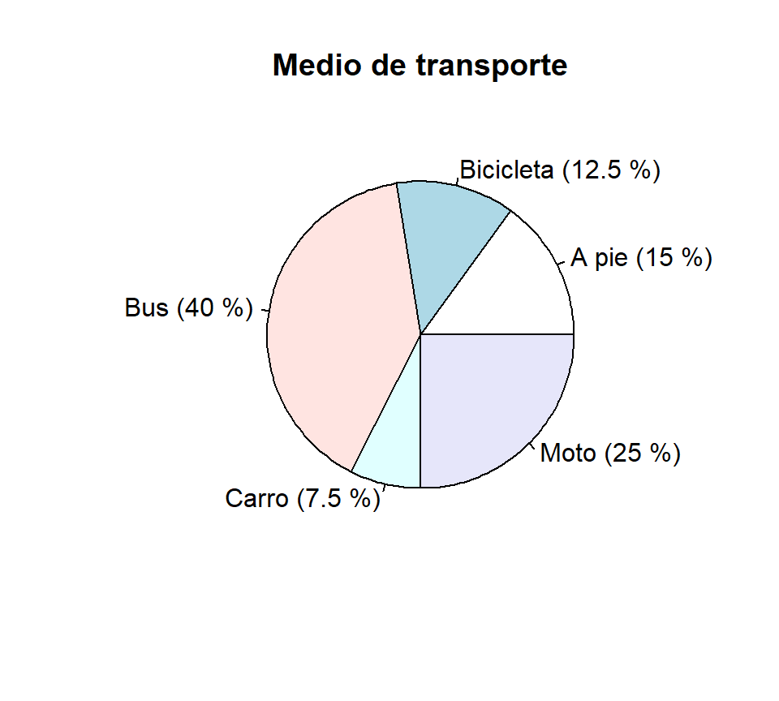
Para una tabla de contingencia se le dan a table() las dos variables. Como el estrato 5 no tiene datos, usamos droplevels() para excluirlo y evitar una columna vacía:
tabla_cruzada <- table(encuesta$transporte, droplevels(encuesta$estrato))
addmargins(tabla_cruzada)
1 2 3 4 6 Sum
A pie 0 1 3 2 0 6
Bicicleta 0 0 3 2 0 5
Bus 4 7 5 0 0 16
Carro 0 0 0 2 1 3
Moto 0 2 6 2 0 10
Sum 4 10 17 8 1 40round(100 * prop.table(tabla_cruzada, margin = 2), 1) # % por columna (estrato)
1 2 3 4 6
A pie 0.0 10.0 17.6 25.0 0.0
Bicicleta 0.0 0.0 17.6 25.0 0.0
Bus 100.0 70.0 29.4 0.0 0.0
Carro 0.0 0.0 0.0 25.0 100.0
Moto 0.0 20.0 35.3 25.0 0.0Variables cuantitativas
tiempos <- encuesta$tiempo
sort(tiempos) # arreglo ordenado [1] 7 9 10 12 13 14 15 16 17 18 18 20 20 21 22 23 24 24 25 26 27 28 30 30 31
[26] 32 33 34 35 37 39 40 42 44 45 48 50 53 58 64stem(tiempos) # diagrama de tallo y hojas
The decimal point is 1 digit(s) to the right of the |
0 | 79
1 | 023456788
2 | 00123445678
3 | 001234579
4 | 02458
5 | 038
6 | 4El diagrama de tallo y hojas de R puede verse un poco distinto del que construimos a mano, porque la función elige automáticamente cómo dividir los tallos. Para la tabla de frecuencias agrupadas, la función cut() asigna cada dato a su clase; con right = FALSE las clases incluyen su límite inferior y excluyen el superior, la misma convención que usamos en la sección 6:
limites <- seq(5, 65, by = 10)
clases <- cut(tiempos, breaks = limites, right = FALSE)
fi <- table(clases)
tabla_tiempos <- data.frame(
clase = names(fi),
xi = seq(10, 60, by = 10), # marcas de clase
fi = as.vector(fi),
hi = as.vector(prop.table(fi)),
Fi = cumsum(as.vector(fi)),
Hi = cumsum(as.vector(prop.table(fi)))
)
tabla_tiempos clase xi fi hi Fi Hi
1 [5,15) 10 6 0.15 6 0.15
2 [15,25) 20 12 0.30 18 0.45
3 [25,35) 30 10 0.25 28 0.70
4 [35,45) 40 6 0.15 34 0.85
5 [45,55) 50 4 0.10 38 0.95
6 [55,65) 60 2 0.05 40 1.00El histograma se construye con hist(), usando los mismos límites; sobre él se puede dibujar el polígono de frecuencias con lines(). La ojiva se dibuja con plot(), ubicando las frecuencias relativas acumuladas sobre los límites superiores de las clases:
hist(tiempos, breaks = limites, right = FALSE, xlim = c(0, 70),
col = "steelblue", border = "white",
main = "Tiempo de desplazamiento",
xlab = "Tiempo (minutos)", ylab = "Frecuencia absoluta")
lines(c(0, tabla_tiempos$xi, 70), c(0, tabla_tiempos$fi, 0),
type = "b", col = "firebrick", lwd = 2, pch = 19)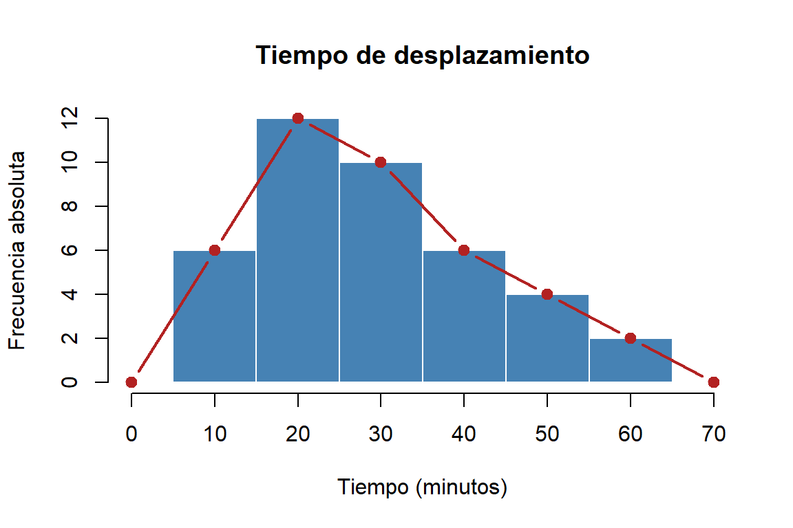
plot(limites, c(0, tabla_tiempos$Hi), type = "b", pch = 19,
col = "steelblue", lwd = 2,
main = "Ojiva", xlab = "Tiempo (minutos)",
ylab = "Frecuencia relativa acumulada")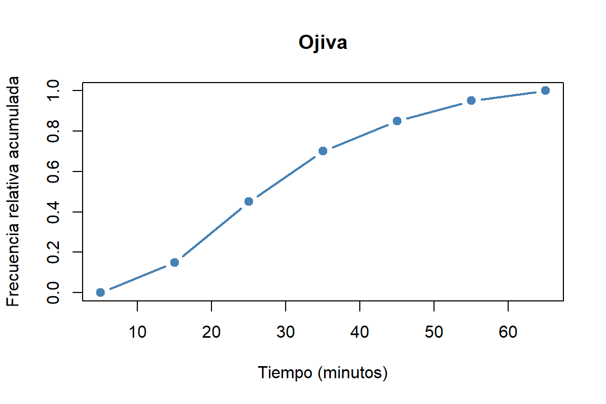
Medidas descriptivas
Las medidas de la sección 7 se calculan con funciones directas:
mean(tiempos) # media[1] 28.85median(tiempos) # mediana[1] 26.5frec <- table(tiempos)
names(frec)[frec == max(frec)] # moda (o modas)[1] "18" "20" "24" "30"range(tiempos) # mínimo y máximo[1] 7 64diff(range(tiempos)) # rango[1] 57var(tiempos) # varianza muestral (divide entre n - 1)[1] 195.5667sd(tiempos) # desviación estándar muestral[1] 13.98452100 * sd(tiempos) / mean(tiempos) # coeficiente de variación (%)[1] 48.47319quantile(tiempos, probs = c(0.25, 0.50, 0.75)) # cuartiles 25% 50% 75%
18.0 26.5 37.5 quantile(tiempos, probs = c(0.10, 0.90)) # deciles 1 y 9 10% 90%
12.9 48.2 IQR(tiempos) # rango intercuartílico[1] 19.5summary(tiempos) # resumen de cinco números y media Min. 1st Qu. Median Mean 3rd Qu. Max.
7.00 18.00 26.50 28.85 37.50 64.00 Compare con los resultados de la sección 7: \(\bar{x} = 28{,}85\), \(Me = 26{,}5\), \(s = 13{,}98\), \(CV = 48{,}5\) %, \(Q_1 = 18\), \(Q_3 = 37{,}5\), \(D_1 = 12{,}9\), \(D_9 = 48{,}2\) y \(RIC = 19{,}5\). La función quantile() usa por defecto el mismo procedimiento de interpolación que presentamos para los percentiles. Para la media ponderada del Ejemplo 8 se usa weighted.mean():
weighted.mean(c(3.5, 4.2, 4.0, 4.8), w = c(4, 3, 3, 2))[1] 4.016667Los coeficientes de forma \(b_1\) y \(b_2\) se calculan con las funciones skewness() y kurtosis() del paquete e1071 (Meyer et al., 2024); \(A_P\) y \(K\) se calculan directamente con sus fórmulas:
library(e1071)
skewness(tiempos) # b1[1] 0.5803888kurtosis(tiempos) # b2 (exceso de curtosis)[1] -0.42389753 * (mean(tiempos) - median(tiempos)) / sd(tiempos) # A_P de Pearson[1] 0.504129D <- quantile(tiempos, probs = c(0.10, 0.90))
unname(IQR(tiempos) / (2 * (D[2] - D[1]))) # K percentílico[1] 0.276204El diagrama de caja se dibuja con boxplot(). Con una fórmula del tipo variable ~ grupo se obtiene un diagrama por cada grupo, lo que permite compararlos:
boxplot(tiempos, horizontal = TRUE, col = "lightsteelblue",
xlab = "Tiempo de desplazamiento (minutos)")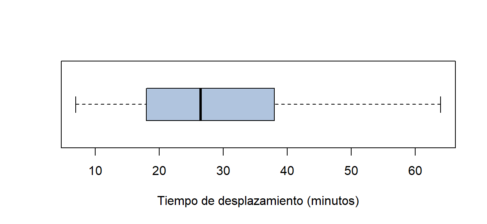
boxplot(tiempo ~ transporte, data = encuesta, horizontal = TRUE,
col = "lightsteelblue", las = 1,
xlab = "Tiempo de desplazamiento (minutos)", ylab = "")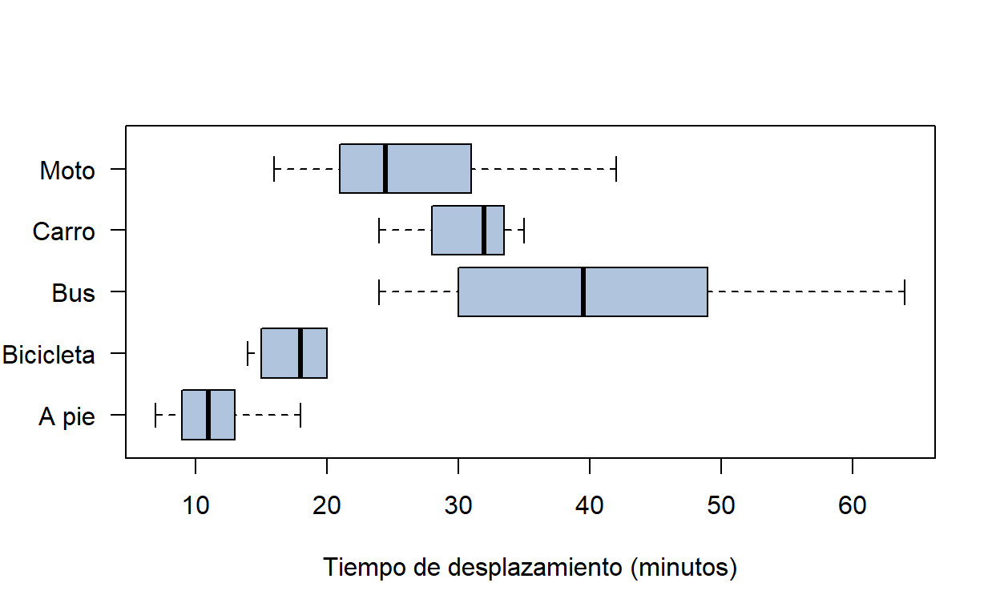
La Figura 19 muestra con claridad que quienes llegan a pie tardan mucho menos que quienes usan bus, y que los tiempos en bus son además los más dispersos.
Un detalle de boxplot()
Para dibujar la caja, boxplot() no usa quantile(), sino las bisagras de Tukey (R Core Team, 2024; Tukey, 1977), que pueden diferir ligeramente de los cuartiles en muestras pequeñas. Con los tiempos de desplazamiento, el borde derecho de la caja queda en 38 en lugar de 37,5; puede verificarlo con boxplot.stats(tiempos)$stats. El paquete ggplot2, en cambio, usa los mismos cuartiles de quantile().
Gráficos con ggplot2
Las funciones barplot(), hist() y boxplot() producen gráficos rápidos. Para gráficos de mayor calidad se usa el paquete ggplot2, con el que se construyeron todas las figuras de este capítulo. Su lógica es construir el gráfico por capas (Wickham et al., 2023; Wilke, 2019): se indica la base de datos con ggplot(), se asignan las variables a los ejes con aes() y se agrega el tipo de gráfico con una función geom_, unidas con el signo +:
library(ggplot2)
ggplot(encuesta, aes(x = tiempo)) +
geom_histogram(breaks = seq(5, 65, by = 10), closed = "left",
fill = "steelblue", color = "white") +
labs(x = "Tiempo de desplazamiento (minutos)", y = "Frecuencia absoluta")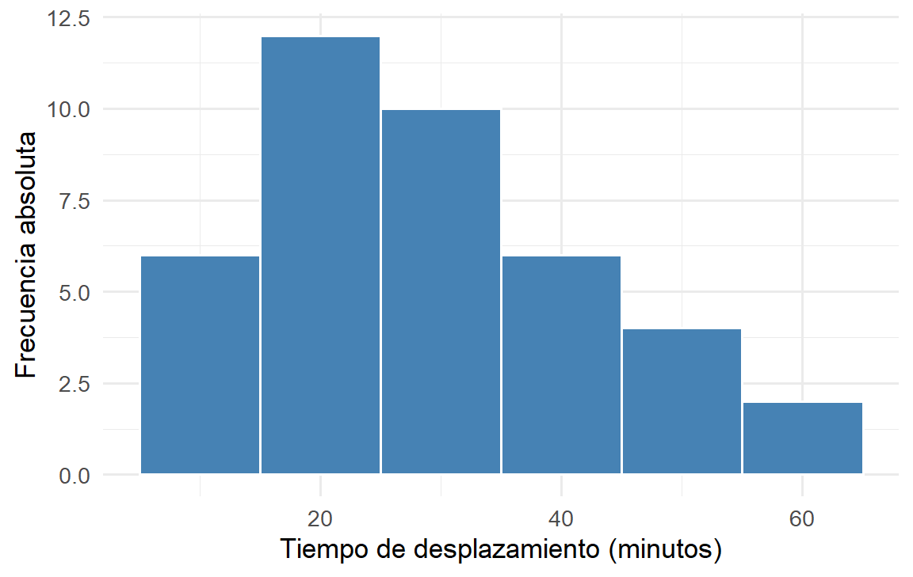
ggplot(encuesta, aes(x = tiempo, y = transporte)) +
stat_boxplot(geom = "errorbar", width = 0.3, orientation = "y") +
geom_boxplot(fill = "lightsteelblue") +
labs(x = "Tiempo de desplazamiento (minutos)", y = NULL)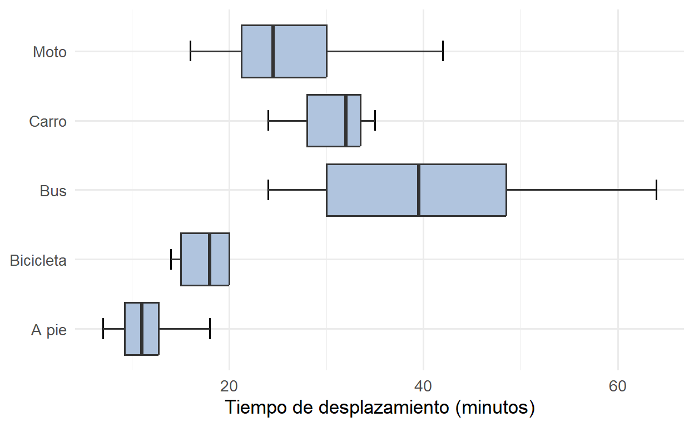
La Tabla 18 resume las funciones de R que usamos en este capítulo.
| Tarea | Función de R |
|---|---|
| Importar datos | read_excel(), read.csv(), read.csv2() |
| Revisar una base | str(), head(), summary(), nrow() |
| Convertir a factor | factor(), factor(..., ordered = TRUE) |
| Tablas de frecuencias | table(), prop.table(), cumsum() |
| Tablas de contingencia | table(x, y), addmargins(), prop.table(..., margin = ) |
| Agrupar en clases | cut(..., right = FALSE) |
| Gráficos (R base) | barplot(), pie(), hist(), boxplot(), plot() |
| Tendencia central | mean(), median(), weighted.mean() |
| Dispersión | range(), var(), sd(), IQR() |
| Posición | quantile(), summary() |
| Forma | skewness(), kurtosis() (paquete e1071) |
9 Ejercicios propuestos
9.1 Conceptos básicos
- En cada situación, identifique la población, la muestra, el parámetro de interés y el estadístico utilizado.
- Una planta embotelladora selecciona al azar 200 botellas de un lote de 50 000 y encuentra que el volumen promedio es de 498 ml.
- Una secretaría de salud mide el nivel de hemoglobina de 300 niños escogidos al azar entre los menores de cinco años de un municipio, y encuentra que el 18 % presenta anemia.
- Un banco revisa todos los créditos que otorgó durante 2025 y calcula que el 4,2 % entró en mora. ¿Es este valor un parámetro o un estadístico? Justifique.
- Clasifique cada variable como cualitativa o cuantitativa (discreta o continua) e indique su escala de medida.
- Resistencia a la compresión de un cilindro de concreto (MPa).
- Número de defectos en una lámina de acero.
- Sector económico de una empresa.
- Estrato socioeconómico de la vivienda.
- Tasa de inflación mensual (%).
- Grupo sanguíneo.
- Intensidad del dolor reportada por un paciente en una escala de 0 a 10.
- Temperatura de un reactor medida en °C, y la misma temperatura medida en kelvin.
- Número de cédula.
- Tiempo de espera en la fila de un banco.
- Indique si cada variable es determinística o aleatoria y explique por qué.
- El interés que genera un CDT con tasa fija y plazo conocidos.
- El número de clientes que llegan a un banco entre las 9 y las 10 a. m.
- El área de un terreno rectangular de 20 m por 35 m.
- El precio del dólar mañana.
- Un día, la temperatura en una ciudad es de 30 °C y en otra de 15 °C. Un noticiero afirma que “en la primera ciudad hace el doble de calor”. ¿Es correcta la afirmación? Explique usando las escalas de medida. ¿Qué cambiaría si las temperaturas se expresaran en kelvin?
9.2 Análisis de datos cualitativos
Para estudiar algunas manifestaciones de los trastornos de la conducta alimentaria, se tomó en Antioquia una muestra de 40 personas diagnosticadas con bulimia o anorexia y se registraron tres características: el síntoma visible principal, el género y la edad, clasificada como joven o adulto. Los datos se presentan en la Tabla 19.
- Clasifique cada una de las variables e indique su escala de medida.
- Construya una tabla de frecuencias para la variable Género y otra para la variable Síntoma.
- Construya una tabla de frecuencias para la variable Edad.
- Construya un diagrama de barras para la variable Síntoma.
- Construya un diagrama circular para la variable Edad. ¿Es adecuado este tipo de gráfico en este caso? Justifique.
- Calcule e interprete una medida de resumen adecuada para la variable Síntoma.
- Construya la tabla de contingencia de Género y Edad. ¿Qué porcentaje de las personas de la muestra son mujeres jóvenes?
- ¿Qué proporción de los hombres adultos presenta el síntoma “Uso de ropa holgada”?
- ¿Qué porcentaje de las personas de la muestra presenta el síntoma “Dieta severa”?
- Construya la tabla de contingencia de Síntoma y Género. ¿Es el síntoma más frecuente el mismo en hombres que en mujeres? Use los porcentajes adecuados para responder.
| N.º | Síntoma | Género | Edad |
|---|---|---|---|
| 1 | Dieta severa | Femenino | Adulto |
| 2 | Uso de ropa holgada | Masculino | Joven |
| 3 | Miedo a engordar | Femenino | Joven |
| 4 | Dieta severa | Masculino | Joven |
| 5 | Dieta severa | Femenino | Joven |
| 6 | Miedo a engordar | Femenino | Adulto |
| 7 | Uso de laxantes | Masculino | Adulto |
| 8 | Miedo a engordar | Femenino | Joven |
| 9 | Miedo a engordar | Femenino | Joven |
| 10 | Dieta severa | Femenino | Adulto |
| 11 | Dieta severa | Femenino | Joven |
| 12 | Dieta severa | Masculino | Joven |
| 13 | Miedo a engordar | Masculino | Joven |
| 14 | Dieta severa | Masculino | Joven |
| 15 | Miedo a engordar | Masculino | Adulto |
| 16 | Miedo a engordar | Femenino | Joven |
| 17 | Hiperactividad | Masculino | Joven |
| 18 | Uso de laxantes | Femenino | Adulto |
| 19 | Uso de ropa holgada | Femenino | Adulto |
| 20 | Uso de laxantes | Masculino | Adulto |
| 21 | Hiperactividad | Masculino | Joven |
| 22 | Uso de laxantes | Masculino | Adulto |
| 23 | Uso de ropa holgada | Femenino | Joven |
| 24 | Dieta severa | Femenino | Adulto |
| 25 | Uso de ropa holgada | Masculino | Joven |
| 26 | Uso de laxantes | Femenino | Adulto |
| 27 | Miedo a engordar | Masculino | Joven |
| 28 | Dieta severa | Masculino | Joven |
| 29 | Miedo a engordar | Masculino | Joven |
| 30 | Uso de laxantes | Masculino | Adulto |
| 31 | Miedo a engordar | Femenino | Adulto |
| 32 | Miedo a engordar | Femenino | Joven |
| 33 | Dieta severa | Femenino | Joven |
| 34 | Dieta severa | Masculino | Joven |
| 35 | Hiperactividad | Femenino | Joven |
| 36 | Uso de laxantes | Femenino | Adulto |
| 37 | Uso de laxantes | Femenino | Joven |
| 38 | Dieta severa | Masculino | Joven |
| 39 | Uso de laxantes | Masculino | Joven |
| 40 | Dieta severa | Masculino | Joven |
9.3 Análisis de datos cuantitativos
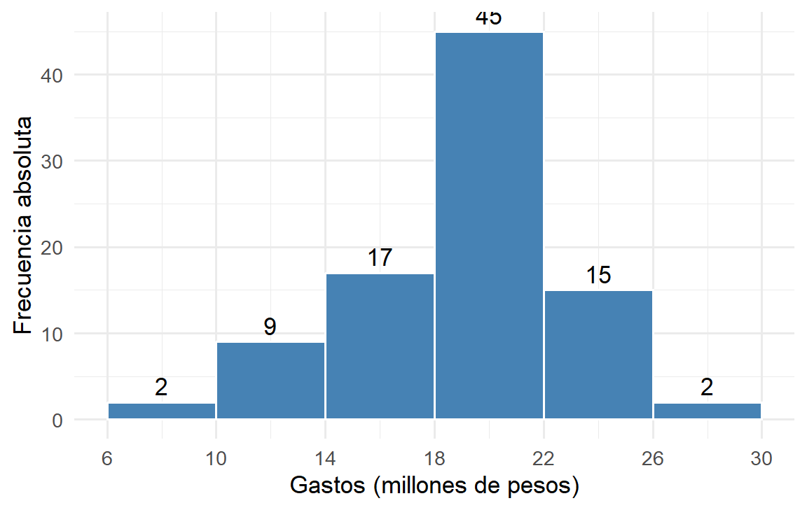
El histograma de la Figura 22 muestra la distribución de los gastos anuales, en millones de pesos, en investigación de mercados de una muestra de empresas de Medellín. Cada clase incluye su límite inferior y excluye el superior.
- ¿Cuántas empresas hay en la muestra?
- ¿Qué proporción de las empresas tiene gastos por debajo de 22 millones de pesos?
- ¿Qué porcentaje de las empresas tiene gastos mayores o iguales a 18 millones de pesos?
- ¿Cuántas empresas han gastado por lo menos 22 millones de pesos?
- Construya la tabla de frecuencias agrupadas correspondiente, con marcas de clase y frecuencias acumuladas, y dibuje la ojiva.
- Describa la forma de la distribución.
Los siguientes datos corresponden al consumo mensual de energía eléctrica, en kWh, de 30 hogares:
112, 145, 98, 176, 134, 160, 121, 189, 152, 140, 205, 131, 167, 118, 143, 158, 226, 137, 149, 172, 126, 155, 183, 101, 164, 139, 197, 147, 129, 251.
- Clasifique la variable e indique su escala de medida.
- Construya el arreglo ordenado y el diagrama de tallo y hojas (use como tallo las centenas y decenas, y como hoja las unidades).
- Construya una tabla de frecuencias agrupadas usando la regla de Sturges. Justifique la elección de la amplitud y del primer límite.
- Dibuje el histograma, el polígono de frecuencias y la ojiva.
- Describa la forma de la distribución.
- Usando la ojiva, estime qué porcentaje de los hogares consume menos de 150 kWh y por debajo de qué consumo se encuentra la mitad de los hogares.
Un centro de atención telefónica registró el número de llamadas recibidas en cada uno de 40 minutos consecutivos:
1, 2, 2, 0, 3, 3, 3, 4, 2, 1, 0, 0, 1, 3, 1, 2, 2, 2, 3, 4, 2, 1, 3, 2, 3, 6, 2, 1, 1, 2, 4, 5, 0, 1, 3, 2, 1, 4, 5, 2.
- Clasifique la variable. ¿Por qué no es necesario agrupar los datos en intervalos?
- Construya la tabla de frecuencias con frecuencias acumuladas.
- Dibuje el diagrama de bastones.
- ¿En qué porcentaje de los minutos se recibieron a lo sumo dos llamadas? ¿Y más de tres?
9.4 Medidas numéricas descriptivas
Los siguientes datos corresponden al número de horas semanales que dedican al estudio independiente ocho estudiantes: 6, 10, 8, 15, 9, 7, 12, 5.
- Calcule a mano la media, la mediana y la moda.
- Calcule el rango, la varianza, la desviación estándar y el coeficiente de variación, organizando los cálculos en una tabla como la Tabla 13.
- Calcule los cuartiles con el procedimiento de la sección y el rango intercuartílico.
- Si un noveno estudiante reporta 40 horas, ¿cómo cambian la media, la mediana, la desviación estándar y el rango intercuartílico? ¿Qué medidas son más robustas?
En una empresa, los tiempos de ensamble de una pieza en la línea A tienen media 12 minutos y desviación estándar 1,8 minutos; los costos de producción de otra pieza tienen media 45 000 pesos y desviación estándar 5 400 pesos. ¿Cuál de las dos variables tiene mayor variabilidad relativa? Justifique.
Para los datos de consumo de energía del ejercicio 7:
- Calcule la media, la mediana, la desviación estándar, el coeficiente de variación, los cuartiles y el rango intercuartílico.
- Construya el diagrama de caja. ¿Hay valores atípicos?
- Calcule \(b_1\) y \(A_P\) e interprete la forma de la distribución. ¿Concuerda con lo que observó en el histograma?
- Proponga el resumen numérico más adecuado para estos datos y justifique su elección.
Un estudiante cursó en el semestre Física I (4 créditos, nota 3,2), Química (4 créditos, nota 3,9), Cálculo II (4 créditos, nota 3,0) y Cátedra UIS (1 crédito, nota 5,0). Calcule su promedio ponderado y compárelo con el promedio simple. ¿Por qué difieren?
Responda y justifique, usando las fórmulas de la sección.
- Si a todos los datos se les suma una constante \(c\), ¿qué ocurre con la media, la mediana, la desviación estándar y el coeficiente de variación?
- Si todos los datos se multiplican por una constante \(c > 0\) (por ejemplo, al convertir de minutos a horas), ¿qué ocurre con esas mismas medidas?
- ¿Puede la desviación estándar ser negativa? ¿Cuándo es igual a cero?
- ¿Puede la media de un conjunto de datos ser mayor que su máximo?
9.5 Análisis de datos con R
Construya en R un data frame con la información de ocho compañeros de clase que incluya al menos una variable nominal, una ordinal, una cuantitativa discreta y una cuantitativa continua. Convierta cada variable al tipo adecuado, verifique con
str()y resuma la base consummary().Importe a R el archivo
trastornos_alimentarios.xlsxy resuelva con R el ejercicio 5. Construya además la tabla de contingencia de las tres variables contable(datos$sintoma, datos$genero, datos$edad)y explique qué tipo de estructura de datos produce.Importe el archivo
consumo_energia.csvy resuelva con R los ejercicios 7 y 11. Compare los resultados con los que obtuvo a mano.Escriba en R los datos del ejercicio 8 como un vector y resuelva el ejercicio. Para el diagrama de bastones puede usar
plot(table(llamadas), ylab = "Frecuencia absoluta").Con la base
encuesta_estudiantes.xlsx:- Construya la tabla de frecuencias de la variable
carreray su diagrama de barras ordenado de mayor a menor. - Calcule la media, la mediana y la desviación estándar del tiempo de desplazamiento para cada medio de transporte. (Sugerencia: use
tapply(encuesta$tiempo, encuesta$transporte, mean).) - Construya la tabla de contingencia de
transporteyestratocon porcentajes por fila e interprétela. - Calcule las medidas descriptivas del número de hermanos. ¿Qué medida de tendencia central es más adecuada para esta variable?
- Construya la tabla de frecuencias de la variable
Gráficos con ggplot2. Las figuras de la sección “Análisis descriptivo con R” se construyeron con las funciones de R base, que son rápidas pero de apariencia sencilla. Reproduzca cada una con
ggplot2, cuidando que queden claras y bien presentadas: títulos y ejes en español, colores adecuados y sin elementos innecesarios.- El diagrama de barras del medio de transporte (Figura 14), con las barras ordenadas de mayor a menor y la frecuencia escrita sobre cada barra. (Sugerencia: construya primero un data frame con
as.data.frame(table(encuesta$transporte))y usegeom_col(),reorder()ygeom_text()). - El diagrama circular (Figura 15), con el porcentaje de cada categoría. (Sugerencia:
geom_col()concoord_polar(theta = "y"),geom_text()conposition_stack(vjust = 0.5)ytheme_void()). - El histograma con el polígono de frecuencias (Figura 16). (Sugerencia:
geom_histogram()conbreaks = seq(5, 65, by = 10)yclosed = "left"; para el polígono,geom_line()ygeom_point()con un data frame de marcas de clase y frecuencias, agregando las clases vacías de los extremos). - La ojiva (Figura 17), con el eje vertical en porcentaje y una línea punteada que muestre cómo se lee la mediana. (Sugerencia:
geom_line(),geom_point()yannotate("segment", ...)). - El diagrama de caja del tiempo de desplazamiento (Figura 18), con la raya vertical en los extremos de los bigotes. (Sugerencia:
stat_boxplot(geom = "errorbar")antes degeom_boxplot()). - Los diagramas de caja por medio de transporte (Figura 19), con las cajas ordenadas según la mediana del tiempo. (Sugerencia:
reorder(transporte, tiempo, FUN = median)). - Compare los diagramas de caja de los literales e y f con los de R base. ¿Coinciden los bordes de las cajas? Explique por qué (véase el recuadro “Un detalle de boxplot()”).
- Guarde los seis gráficos en la carpeta
resultadosde su proyecto conggsave(), por ejemplo,ggsave("resultados/barras_transporte.png", width = 7, height = 4).
- El diagrama de barras del medio de transporte (Figura 14), con las barras ordenadas de mayor a menor y la frecuencia escrita sobre cada barra. (Sugerencia: construya primero un data frame con
9.6 Transformación de variables
Con frecuencia, antes de analizar una base de datos hay que transformar algunas de sus variables, es decir, crear variables nuevas a partir de las existentes. Las transformaciones más comunes son cuatro:
- Cambio de unidades: pasar de minutos a horas, de grados Celsius a Fahrenheit o de euros a pesos. Son transformaciones lineales de la forma \(y = a + bx\). Para una variable en escala de intervalo son válidas las transformaciones \(y = a + bx\) con \(b > 0\); para una variable en escala de razón solo las de la forma \(y = bx\) con \(b > 0\), porque deben conservar el cero absoluto y, con él, el significado de los cocientes (Stevens, 1946).
- Recodificación: cambiar los códigos de una variable cualitativa por etiquetas comprensibles (por ejemplo, 0 y 1 por “No” y “Sí”), traducir o reordenar sus categorías, o agrupar categorías.
- Categorización: convertir una variable cuantitativa en cualitativa ordinal agrupando sus valores en intervalos, como hicimos en la tabla de frecuencias agrupadas. Se gana facilidad de interpretación, pero se pierde información.
- Variables derivadas: combinar variables (por ejemplo, el valor por pizza como el total de la cuenta dividido entre el número de pizzas) o estandarizarlas, \(z_i = (x_i - \bar{x})/s\), para expresar cada dato como número de desviaciones estándar por encima o por debajo de la media.
Transformaciones en R
En R, una variable nueva se crea asignándola a una columna nueva del data frame con $. Algunos ejemplos con la base de pizzas del ejercicio 22:
pizza$time_h <- pizza$time / 60 # minutos a horas
pizza$temp_F <- 32 + 1.8 * pizza$temperature # °C a °F
pizza$descuento <- factor(pizza$discount_customer, # recodificar 0/1
levels = c(0, 1), labels = c("No", "Sí"))
pizza$dia <- factor(pizza$day, # traducir y ordenar
levels = c("Monday", "Tuesday", "Wednesday", "Thursday",
"Friday", "Saturday", "Sunday"),
labels = c("Lunes", "Martes", "Miércoles", "Jueves",
"Viernes", "Sábado", "Domingo"))
pizza$puntualidad <- cut(pizza$time, breaks = c(0, 30, 40, Inf), # categorizar
labels = c("A tiempo", "Retraso leve", "Retraso"))
pizza$valor_pizza <- pizza$bill / pizza$pizzas # variable derivada
pizza$z_temp <- (pizza$temperature - mean(pizza$temperature)) /
sd(pizza$temperature) # estandarizarEn cut() sin right = FALSE, las clases incluyen su límite superior: \((0, 30]\), \((30, 40]\) y \((40, \infty)\).
- Con la base
encuesta_estudiantes.xlsx:- Cree la variable
tiempo_hcon el tiempo de desplazamiento en horas. Calcule la media y la desviación estándar detiempoy detiempo_h, y verifique que se cumplen las relaciones que encontró en el ejercicio 13. - Recodifique el estrato en una nueva variable
nivelcon tres categorías ordenadas: “Bajo” (estratos 1 y 2), “Medio” (3 y 4) y “Alto” (5 y 6). Construya su tabla de frecuencias. - Categorice el tiempo de desplazamiento en “Corto” (hasta 15 minutos), “Medio” (más de 15 y hasta 35) y “Largo” (más de 35), y construya la tabla de contingencia con el medio de transporte. ¿Qué información se pierde al categorizar?
- Estandarice el tiempo de desplazamiento. ¿Qué valor \(z\) corresponde al estudiante que tarda 64 minutos? Interprételo.
- Cree la variable
- Con la base
pizza_delivery.xlsx:- Convierta la temperatura a grados Fahrenheit. Verifique que la media en °F es igual a \(32 + 1{,}8\) veces la media en °C. ¿Ocurre lo mismo con la desviación estándar? ¿Por qué?
- Explique por qué la transformación de °C a °F es válida para la temperatura, pero no permite afirmar que una pizza a 80 °F está “el doble de caliente” que una a 40 °F.
- Convierta el valor de la cuenta de euros a pesos colombianos usando la tasa de cambio del día. ¿Qué tipo de transformación es? ¿Cambia el coeficiente de variación?
- Recodifique la variable
daycon los nombres de los días en español, ordenados de lunes a domingo, y construya el diagrama de barras de las entregas por día. - Cree la variable
puntualidady compare su tabla de frecuencias con la defree_wine. ¿Qué relación encuentra?
9.7 Análisis exploratorio de una base de datos real
Proyecto: el servicio de entrega de pizzas. La base pizza_delivery.xlsx contiene información de las 1266 entregas a domicilio que hizo una pizzería durante mayo de 2014, desde sus tres sucursales. Es la base que Heumann et al. (2022) usan como ejemplo a lo largo de su libro. El gerente quiere que las entregas tarden como máximo 30 minutos y que las pizzas lleguen a una temperatura de al menos 65 °C; además, la pizzería promete una botella de vino gratis cuando la entrega tarda más de 40 minutos. Las variables se describen en la Tabla 20.
Realice un análisis exploratorio completo de la base, usando R:
- Importe la base, revise su estructura con
str()y verifique el número de filas y de columnas. - Clasifique cada variable (cualitativa o cuantitativa, discreta o continua) e indique su escala de medida. Convierta a factor las que corresponda, recodificando las variables 0/1 con etiquetas “No” y “Sí”.
- Variables cualitativas. Construya las tablas de frecuencias y los diagramas de barras de
branch,driver,operatoryday(esta última con los días ordenados de lunes a domingo). ¿Qué día hay más entregas? ¿Qué domiciliario hace más entregas? - Tablas de contingencia. Construya la tabla de
driverybranchcon los porcentajes adecuados para responder si todos los domiciliarios trabajan por igual en las tres sucursales. Entre los clientes que tenían derecho al vino gratis, ¿qué porcentaje lo recibió? ¿Ese porcentaje es similar para todos los domiciliarios? - Variables cuantitativas. Para
time,temperatureybill, construya el histograma y el diagrama de caja, y calcule las medidas de tendencia central, dispersión, posición y forma. Describa la forma de cada distribución e identifique si hay valores atípicos. - El número de pizzas. Construya la tabla de frecuencias y el diagrama de bastones de
pizzas. ¿Cuál es la medida de tendencia central más adecuada? - Las metas del gerente. ¿Qué porcentaje de las entregas tardó como máximo 30 minutos? ¿Qué porcentaje de las pizzas llegó con menos de 65 °C? Compare estos porcentajes entre sucursales y entre domiciliarios.
- Comparación de grupos. Construya diagramas de caja del tiempo de entrega y de la temperatura por sucursal y por domiciliario. ¿Hay domiciliarios o sucursales que se destaquen, para bien o para mal?
- Informe. Redacte un informe de una página dirigido al gerente con los principales hallazgos, acompañado de las dos tablas y los dos gráficos que considere más útiles.
- Importe la base, revise su estructura con
| Variable | Descripción |
|---|---|
id |
Número de la entrega |
day |
Día de la semana de la entrega (en inglés) |
date |
Fecha de la entrega |
time |
Tiempo de entrega, en minutos |
operator |
Persona que recibió el pedido por teléfono (Laura o Melissa) |
branch |
Sucursal desde la que se despachó el pedido (Centre, East o West) |
driver |
Domiciliario que hizo la entrega (Bruno, Domenico, Luigi, Mario o Salvatore) |
temperature |
Temperatura de la pizza al llegar al cliente, en °C |
bill |
Valor total de la cuenta, en euros |
pizzas |
Número de pizzas del pedido |
free_wine |
1 si el cliente tenía derecho al vino gratis por demora de más de 40 minutos; 0 si no |
got_wine |
1 si el cliente efectivamente recibió el vino; 0 si no |
discount_customer |
1 si el cliente tiene tarjeta de descuento; 0 si no |
Referencias
Anderson, D. R., Sweeney, D. J., & Williams, T. A. (2008). Estadística para administración y economía (10.ª ed.). Cengage Learning.
Daniel, W. W. (1987). Bioestadística: Base para el análisis de las ciencias de la salud (M. Guzmán Ortiz & A. L. Babinsky Epstein, Trads.; 3.ª ed.). Limusa.
Devore, J. L. (2008). Probabilidad y estadística para ingeniería y ciencias (7.ª ed.). Cengage Learning.
Doane, D. P., & Seward, L. E. (2011). Measuring Skewness: A Forgotten Statistic? Journal of Statistics Education, 19(2). https://doi.org/10.1080/10691898.2011.11889611
Healy, K. (2018). Data Visualization: A Practical Introduction. Princeton University Press. https://socviz.co/
Heumann, C., Schomaker, M., & Shalabh. (2022). Introduction to Statistics and Data Analysis: With Exercises, Solutions and Applications in R (2.ª ed.). Springer. https://doi.org/10.1007/978-3-031-11833-3
Joanes, D. N., & Gill, C. A. (1998). Comparing Measures of Sample Skewness and Kurtosis. Journal of the Royal Statistical Society: Series D (The Statistician), 47(1), 183-189. https://doi.org/10.1111/1467-9884.00122
Meyer, D., Dimitriadou, E., Hornik, K., Weingessel, A., & Leisch, F. (2024). e1071: Misc Functions of the Department of Statistics, Probability Theory Group (Formerly: E1071), TU Wien. https://CRAN.R-project.org/package=e1071
Panik, M. J. (2012). Statistical Inference: A Short Course. Wiley.
Posit team. (2025). RStudio: Integrated Development Environment for R. Posit Software, PBC. https://posit.co/
R Core Team. (2024). R: A Language and Environment for Statistical Computing. R Foundation for Statistical Computing. https://www.R-project.org/
Spiegel, M. R., & Stephens, L. J. (2009). Estadística (4.ª ed.). McGraw-Hill.
Stevens, S. S. (1946). On the Theory of Scales of Measurement. Science, 103(2684), 677-680. https://doi.org/10.1126/science.103.2684.677
Sturges, H. A. (1926). The Choice of a Class Interval. Journal of the American Statistical Association, 21(153), 65-66. https://doi.org/10.1080/01621459.1926.10502161
Sullivan, G. M., & Artino, A. R. (2013). Analyzing and Interpreting Data From Likert-Type Scales. Journal of Graduate Medical Education, 5(4), 541-542. https://doi.org/10.4300/JGME-5-4-18
Tukey, J. W. (1977). Exploratory Data Analysis. Addison-Wesley.
Walpole, R. E., Myers, R. H., Myers, S. L., & Ye, K. (2012). Probabilidad y estadística para ingeniería y ciencias (9.ª ed.). Pearson Educación.
Westfall, P. H. (2014). Kurtosis as Peakedness, 1905–2014. R.I.P. The American Statistician, 68(3), 191-195. https://doi.org/10.1080/00031305.2014.917055
Wickham, H. (2014). Tidy Data. Journal of Statistical Software, 59(10), 1-23. https://doi.org/10.18637/jss.v059.i10
Wickham, H., Çetinkaya-Rundel, M., & Grolemund, G. (2023). R for Data Science (2.ª ed.). O’Reilly Media. https://r4ds.hadley.nz/
Wilke, C. O. (2019). Fundamentals of Data Visualization. O’Reilly Media. https://clauswilke.com/dataviz/